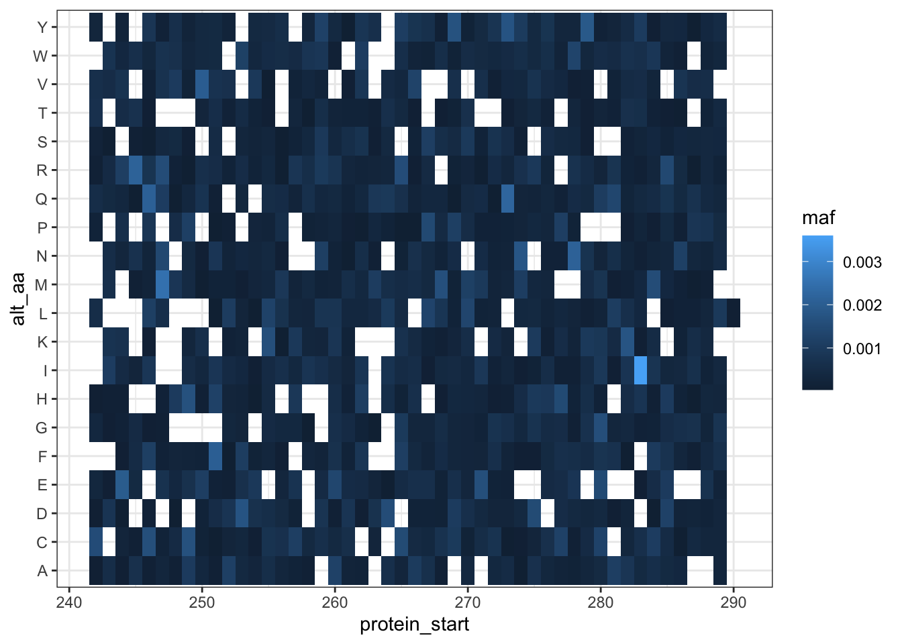
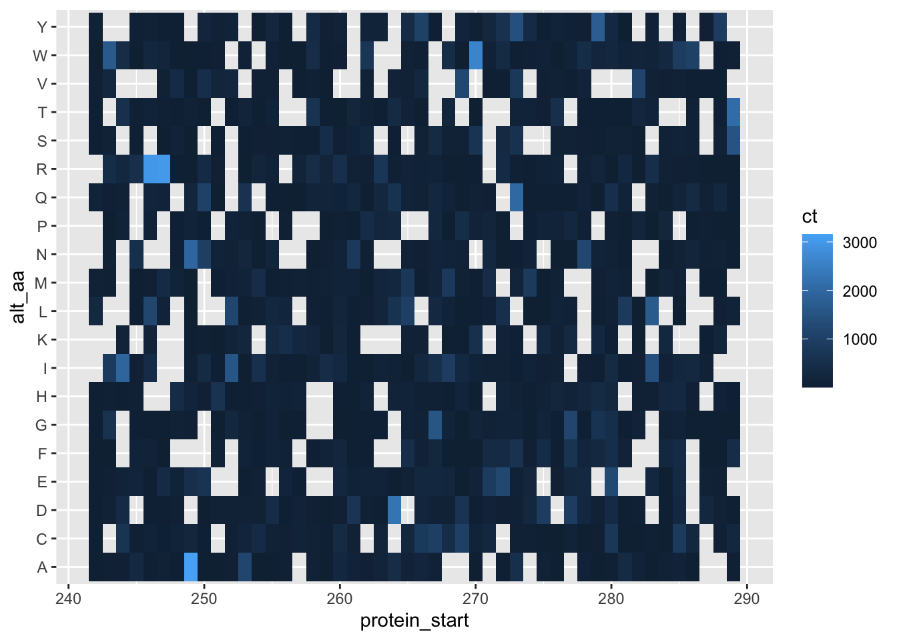
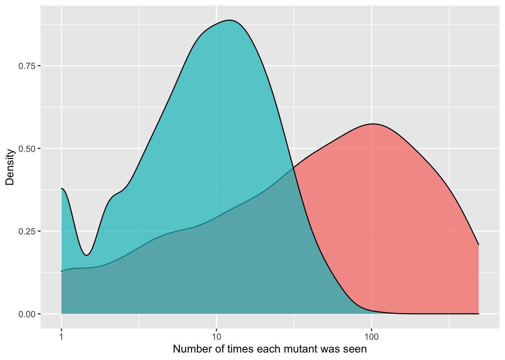
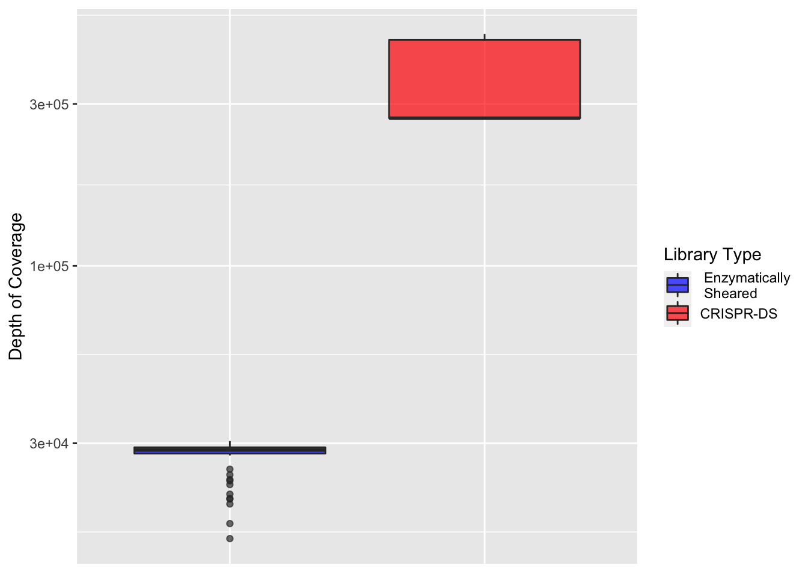
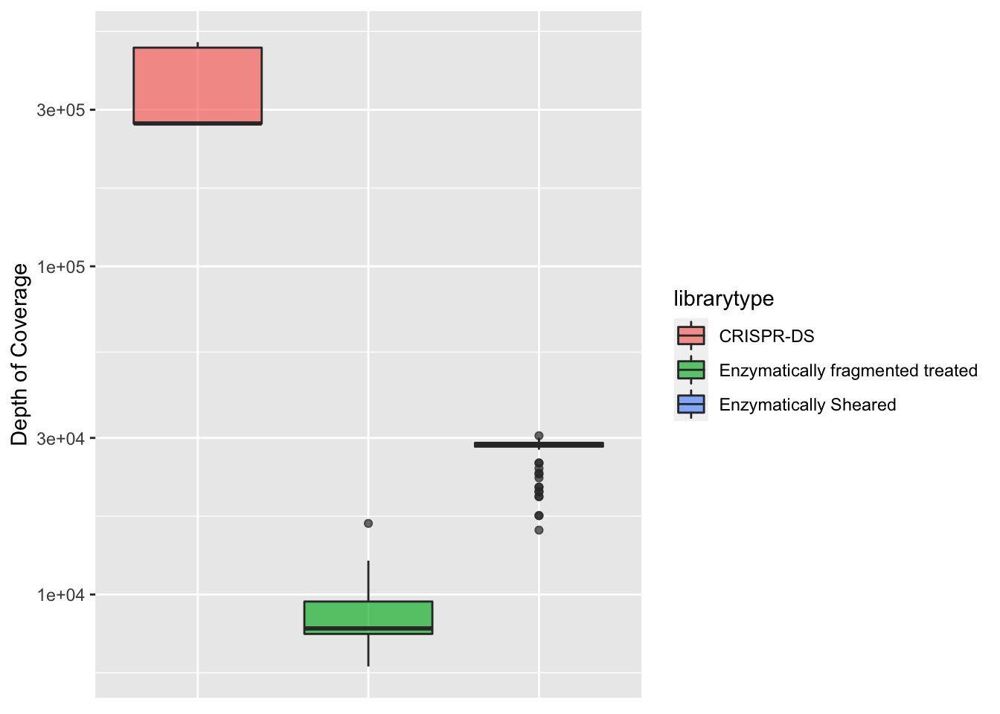
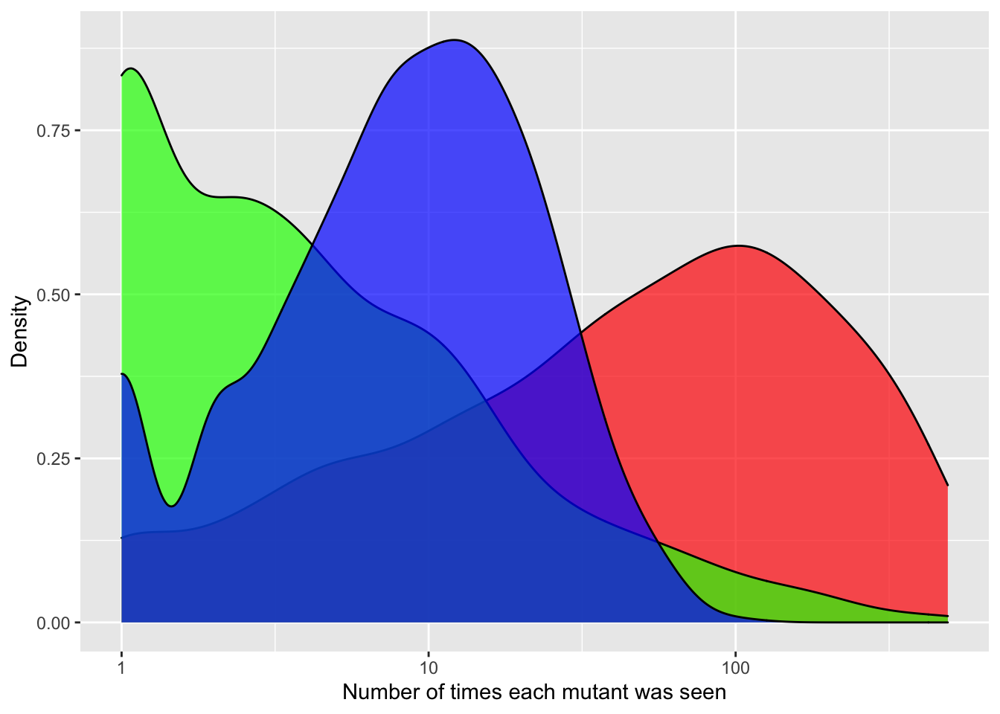
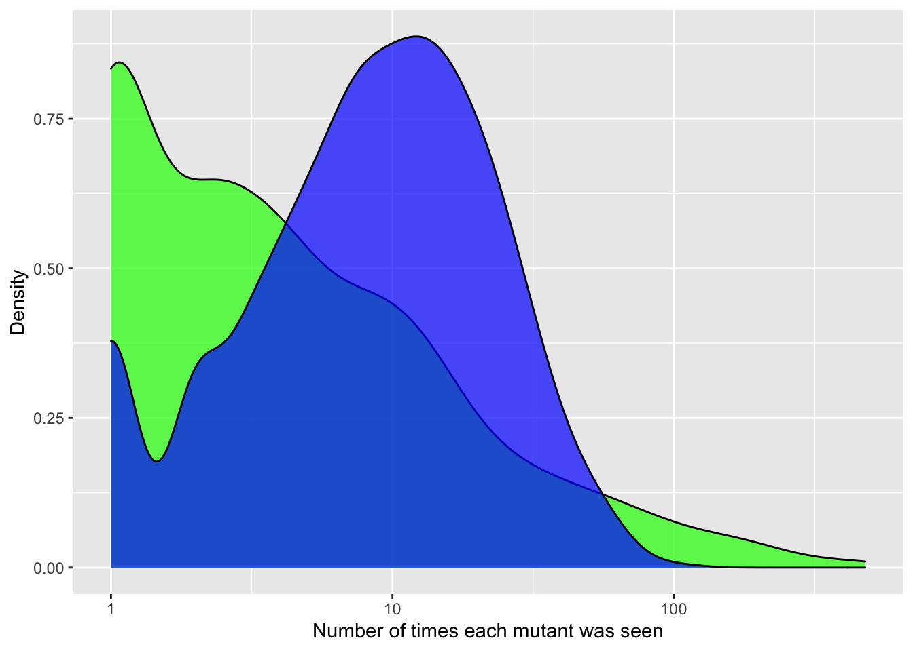
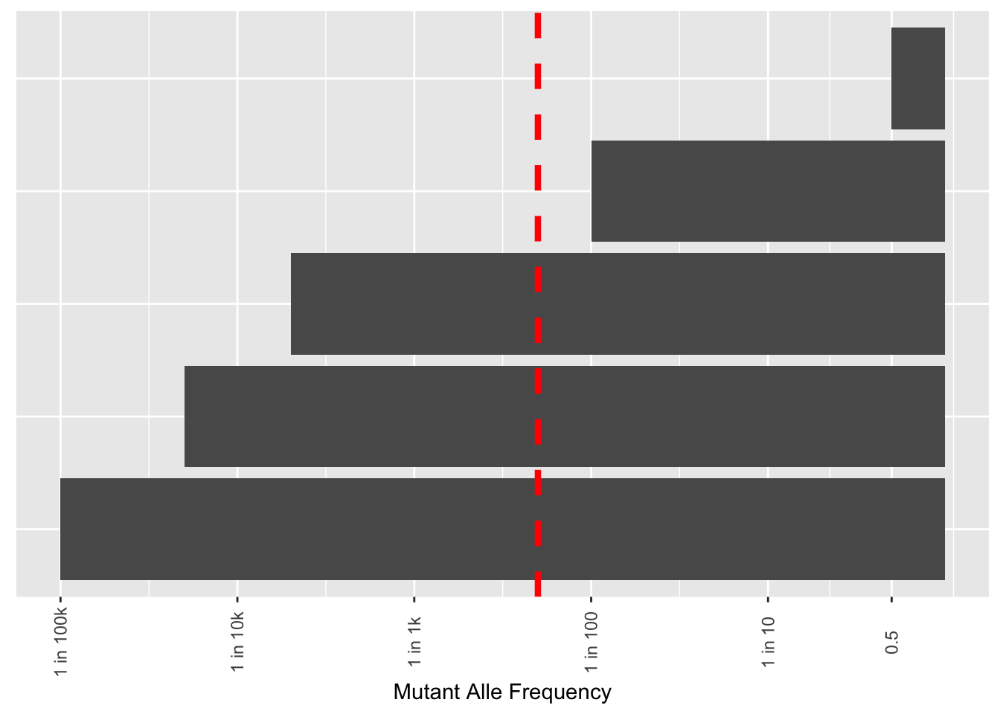

Last updated: 2023-02-22
Checks: 6 1
Knit directory: duplex_sequencing_screen/
This reproducible R Markdown analysis was created with workflowr (version 1.6.2). The Checks tab describes the reproducibility checks that were applied when the results were created. The Past versions tab lists the development history.
The R Markdown is untracked by Git. To know which version of the R
Markdown file created these results, you’ll want to first commit it to
the Git repo. If you’re still working on the analysis, you can ignore
this warning. When you’re finished, you can run
wflow_publish to commit the R Markdown file and build the
HTML.
Great job! The global environment was empty. Objects defined in the global environment can affect the analysis in your R Markdown file in unknown ways. For reproduciblity it’s best to always run the code in an empty environment.
The command set.seed(20200402) was run prior to running
the code in the R Markdown file. Setting a seed ensures that any results
that rely on randomness, e.g. subsampling or permutations, are
reproducible.
Great job! Recording the operating system, R version, and package versions is critical for reproducibility.
Nice! There were no cached chunks for this analysis, so you can be confident that you successfully produced the results during this run.
Great job! Using relative paths to the files within your workflowr project makes it easier to run your code on other machines.
Great! You are using Git for version control. Tracking code development and connecting the code version to the results is critical for reproducibility.
The results in this page were generated with repository version 7ac4a41. See the Past versions tab to see a history of the changes made to the R Markdown and HTML files.
Note that you need to be careful to ensure that all relevant files for
the analysis have been committed to Git prior to generating the results
(you can use wflow_publish or
wflow_git_commit). workflowr only checks the R Markdown
file, but you know if there are other scripts or data files that it
depends on. Below is the status of the Git repository when the results
were generated:
Ignored files:
Ignored: .Rhistory
Ignored: .Rproj.user/
Ignored: data/Consensus_Data/.Rhistory
Ignored: data/Consensus_Data/Novogene_lane11/sample1/duplex/duplex_sorted_filtered.tsv.gz
Ignored: data/Consensus_Data/Novogene_lane11/sample1/sscs/sscs_sorted_filtered.tsv.gz
Ignored: data/Consensus_Data/Novogene_lane11/sample2/archive/sscs_aligned_filtered.tsv.gz
Ignored: data/Consensus_Data/Novogene_lane11/sample2/duplex/duplex_sorted_filtered.tsv.gz
Ignored: data/Consensus_Data/Novogene_lane11/sample2/sscs/sscs_sorted_filtered.tsv.gz
Ignored: data/Consensus_Data/Novogene_lane11/sample3/duplex/duplex_sorted_filtered.tsv.gz
Ignored: data/Consensus_Data/Novogene_lane11/sample3/sscs/sscs_sorted_filtered.tsv.gz
Ignored: data/Consensus_Data/Novogene_lane11/sample4/duplex/duplex_sorted_filtered.tsv.gz
Ignored: data/Consensus_Data/Novogene_lane11/sample4/sscs/sscs_sorted_filtered.tsv.gz
Ignored: data/Consensus_Data/Novogene_lane11/sample5/variant_caller_outputs/sscs_L858R_aligned_filtered.tsv.gz
Ignored: data/Consensus_Data/Novogene_lane11/sample5/variant_caller_outputs/sscs_L858R_aligned_filtered_sample5.tsv.gz
Ignored: data/Consensus_Data/Novogene_lane11/sample6/archive/sscs_aligned_filtered.tsv.gz
Ignored: data/Consensus_Data/Novogene_lane11/sample6/sscs_L858R_aligned_filtered.tsv.gz
Ignored: data/Consensus_Data/Novogene_lane11/sample6/variant_caller_outputs/variants_ann_sample6.csv.gz
Ignored: data/Consensus_Data/Novogene_lane11/sample7/sscs/sscs_sorted_filtered.tsv.gz
Ignored: data/Consensus_Data/Novogene_lane12/sample1/low_sscscounts/sscs_aligned_filtered.tsv.gz
Ignored: data/Consensus_Data/Novogene_lane12/sample1/sscs_aligned_filtered.tsv.gz
Ignored: data/Consensus_Data/Novogene_lane12/sample3/sscs_combined_filtered.tsv.gz
Ignored: data/Consensus_Data/Novogene_lane12/sample5/sscs_combined_filtered.tsv.gz
Ignored: data/Consensus_Data/Novogene_lane12/sample7/sscs_combined_filtered.tsv.gz
Ignored: data/Consensus_Data/Novogene_lane12/sample9/sscs_combined_filtered.tsv.gz
Ignored: data/Consensus_Data/Novogene_lane13/sample1/duplex/duplex_sorted_filtered.tsv.gz
Ignored: data/Consensus_Data/Novogene_lane13/sample1/sscs/sscs_sorted_filtered.tsv.gz
Ignored: data/Consensus_Data/Novogene_lane13/sample10/duplex/duplex_sorted_filtered.tsv.gz
Ignored: data/Consensus_Data/Novogene_lane13/sample10/sscs/sscs_sorted_filtered.tsv.gz
Ignored: data/Consensus_Data/Novogene_lane13/sample11/duplex/duplex_sorted_filtered.tsv.gz
Ignored: data/Consensus_Data/Novogene_lane13/sample11/sscs/sscs_sorted_filtered.tsv.gz
Ignored: data/Consensus_Data/Novogene_lane13/sample12/duplex/duplex_sorted_filtered.tsv.gz
Ignored: data/Consensus_Data/Novogene_lane13/sample12/sscs/sscs_sorted_filtered.tsv.gz
Ignored: data/Consensus_Data/Novogene_lane13/sample2/sscs_sorted_filtered.tsv.gz
Ignored: data/Consensus_Data/Novogene_lane13/sample3/sscs_sorted_filtered.tsv.gz
Ignored: data/Consensus_Data/Novogene_lane13/sample4/sscs_sorted_filtered.tsv.gz
Ignored: data/Consensus_Data/Novogene_lane13/sample5/sscs_sorted_filtered.tsv.gz
Ignored: data/Consensus_Data/Novogene_lane13/sample6/sscs_sorted_filtered.tsv.gz
Ignored: data/Consensus_Data/Novogene_lane13/sample7/duplex/duplex_sorted_filtered.tsv.gz
Ignored: data/Consensus_Data/Novogene_lane13/sample7/sscs/sscs_sorted_filtered.tsv.gz
Ignored: data/Consensus_Data/Novogene_lane13/sample8/sscs_sorted_filtered.tsv.gz
Ignored: data/Consensus_Data/Novogene_lane13/sample8/variant_caller_outputs/
Ignored: data/Consensus_Data/Novogene_lane13/sample9/duplex/duplex_sorted_filtered.tsv.gz
Ignored: data/Consensus_Data/Novogene_lane13/sample9/sscs/sscs_sorted_filtered.tsv.gz
Ignored: data/Consensus_Data/Novogene_lane14/sample10_combined/duplex/duplex_sorted_filtered.tsv.gz
Ignored: data/Consensus_Data/Novogene_lane14/sample10_combined/sscs/sscs_sorted_filtered.tsv.gz
Ignored: data/Consensus_Data/Novogene_lane14/sample10_combined/sscs/variant_caller_outputs/archive/variants_ann.csv.gz
Ignored: data/Consensus_Data/Novogene_lane14/sample11/duplex/duplex_sorted_filtered.tsv.gz
Ignored: data/Consensus_Data/Novogene_lane14/sample11/sscs/sscs_sorted_filtered.tsv.gz
Ignored: data/Consensus_Data/Novogene_lane14/sample11/sscs/variant_caller_outputs/archive/variants_ann.csv.gz
Ignored: data/Consensus_Data/Novogene_lane14/sample12/duplex/duplex_sorted_filtered.tsv.gz
Ignored: data/Consensus_Data/Novogene_lane14/sample12/sscs/sscs_sorted_filtered.tsv.gz
Ignored: data/Consensus_Data/Novogene_lane14/sample12/sscs/variant_caller_outputs/archive/variants_ann.csv.gz
Ignored: data/Consensus_Data/Novogene_lane14/sample13/
Ignored: data/Consensus_Data/Novogene_lane14/sample14_combined/duplex/duplex_sorted_filtered.tsv.gz
Ignored: data/Consensus_Data/Novogene_lane14/sample14_combined/sscs.filt_1.fa.gz
Ignored: data/Consensus_Data/Novogene_lane14/sample14_combined/sscs/sscs_sorted_filtered.tsv.gz
Ignored: data/Consensus_Data/Novogene_lane14/sample14_combined/sscs/variant_caller_outputs/archive/variants_ann.csv.gz
Ignored: data/Consensus_Data/Novogene_lane14/sample14b/
Ignored: data/Consensus_Data/Novogene_lane14/sample15/duplex/duplex_sorted_filtered.tsv.gz
Ignored: data/Consensus_Data/Novogene_lane14/sample15/sscs/sscs_sorted_filtered.tsv.gz
Ignored: data/Consensus_Data/Novogene_lane14/sample15/sscs/variant_caller_outputs/archive/variants_ann.csv.gz
Ignored: data/Consensus_Data/Novogene_lane14/sample16/duplex/duplex_sorted_filtered.tsv.gz
Ignored: data/Consensus_Data/Novogene_lane14/sample16/sscs/sscs_sorted_filtered.tsv.gz
Ignored: data/Consensus_Data/Novogene_lane14/sample16/sscs/variant_caller_outputs/archive/variants_ann.csv.gz
Ignored: data/Consensus_Data/Novogene_lane14/sample17/duplex/duplex_sorted_filtered.tsv.gz
Ignored: data/Consensus_Data/Novogene_lane14/sample17/sscs/sscs_sorted_filtered.tsv.gz
Ignored: data/Consensus_Data/Novogene_lane14/sample17/sscs/variant_caller_outputs/archive/variants_ann.csv.gz
Ignored: data/Consensus_Data/Novogene_lane14/sample18/duplex/duplex_sorted_filtered.tsv.gz
Ignored: data/Consensus_Data/Novogene_lane14/sample18/sscs/sscs_sorted_filtered.tsv.gz
Ignored: data/Consensus_Data/Novogene_lane14/sample18/sscs/variant_caller_outputs/archive/variants_ann.csv.gz
Ignored: data/Consensus_Data/Novogene_lane14/sample1_combined/
Ignored: data/Consensus_Data/Novogene_lane14/sample2_combined/sscs_sorted_filtered.tsv.gz
Ignored: data/Consensus_Data/Novogene_lane14/sample3/sscs_sorted_filtered.tsv.gz
Ignored: data/Consensus_Data/Novogene_lane14/sample4/sscs_sorted_filtered.tsv.gz
Ignored: data/Consensus_Data/Novogene_lane14/sample5/sscs_sorted_filtered.tsv.gz
Ignored: data/Consensus_Data/Novogene_lane14/sample6/sscs_sorted_filtered.tsv.gz
Ignored: data/Consensus_Data/Novogene_lane14/sample7/sscs_sorted_filtered.tsv.gz
Ignored: data/Consensus_Data/Novogene_lane14/sample7/variant_caller_outputs/duplex/
Ignored: data/Consensus_Data/Novogene_lane14/sample8/sscs_sorted_filtered.tsv.gz
Ignored: data/Consensus_Data/Novogene_lane14/sample8/variant_caller_outputs/
Ignored: data/Consensus_Data/Novogene_lane14/sample9/duplex/duplex_sorted_filtered.tsv.gz
Ignored: data/Consensus_Data/Novogene_lane14/sample9/sscs/sscs_sorted_filtered.tsv.gz
Ignored: data/Consensus_Data/Novogene_lane2/
Ignored: data/Consensus_Data/Novogene_lane3/
Ignored: data/Consensus_Data/Novogene_lane4/
Ignored: data/Consensus_Data/Novogene_lane5/
Ignored: data/Consensus_Data/Novogene_lane6/
Ignored: data/Consensus_Data/Novogene_lane7/
Ignored: data/Consensus_Data/Ranomics_Pooled/
Ignored: data/Consensus_Data/archive/
Ignored: data/Consensus_Data/novogene_lane15/sample_1/duplex/duplex_sorted_filtered.tsv.gz
Ignored: data/Consensus_Data/novogene_lane15/sample_1/firstrun(lowsequencing)/duplex/
Ignored: data/Consensus_Data/novogene_lane15/sample_1/firstrun(lowsequencing)/sscs/
Ignored: data/Consensus_Data/novogene_lane15/sample_1/sscs/sscs_sorted_filtered.tsv.gz
Ignored: data/Consensus_Data/novogene_lane15/sample_2/duplex/duplex_sorted_filtered.tsv.gz
Ignored: data/Consensus_Data/novogene_lane15/sample_2/firstrun(lowsequencing)/sscs/
Ignored: data/Consensus_Data/novogene_lane15/sample_2/sscs/sscs_sorted_filtered.tsv.gz
Ignored: data/Consensus_Data/novogene_lane15/sample_3/duplex/duplex_sorted_filtered.tsv.gz
Ignored: data/Consensus_Data/novogene_lane15/sample_3/firstrun(lowsequencing)/duplex/duplex_sorted_filtered.tsv.gz
Ignored: data/Consensus_Data/novogene_lane15/sample_3/firstrun(lowsequencing)/sscs/sscs_sorted_filtered.tsv.gz
Ignored: data/Consensus_Data/novogene_lane15/sample_3/ngs/Sample3_sorted_filtered.tsv.gz
Ignored: data/Consensus_Data/novogene_lane15/sample_3/ngs/sample3a(firsthalf)/Sample3_sorted_filtered.tsv.gz
Ignored: data/Consensus_Data/novogene_lane15/sample_3/ngs/variants_ann.csv.gz
Ignored: data/Consensus_Data/novogene_lane15/sample_3/sscs/sscs_sorted_filtered.tsv.gz
Ignored: data/Consensus_Data/novogene_lane15/sample_4/duplex/duplex_sorted_filtered.tsv.gz
Ignored: data/Consensus_Data/novogene_lane15/sample_4/firstrun(lowsequencing)/duplex/duplex_sorted_filtered.tsv.gz
Ignored: data/Consensus_Data/novogene_lane15/sample_4/firstrun(lowsequencing)/sscs/sscs_sorted_filtered.tsv.gz
Ignored: data/Consensus_Data/novogene_lane15/sample_4/sscs/sscs_sorted_filtered.tsv.gz
Ignored: data/Consensus_Data/novogene_lane15/sample_5/duplex/duplex_sorted_filtered.tsv.gz
Ignored: data/Consensus_Data/novogene_lane15/sample_5/firstrun(lowsequencing)/duplex/duplex_sorted_filtered.tsv.gz
Ignored: data/Consensus_Data/novogene_lane15/sample_5/firstrun(lowsequencing)/sscs/sscs_sorted_filtered.tsv.gz
Ignored: data/Consensus_Data/novogene_lane15/sample_5/firstrun(lowsequencing)/sscs/variant_caller_outputs/.empty/
Ignored: data/Consensus_Data/novogene_lane15/sample_5/sscs/sscs_sorted_filtered.tsv.gz
Ignored: data/Consensus_Data/novogene_lane15/sample_6/duplex/duplex_sorted_filtered.tsv.gz
Ignored: data/Consensus_Data/novogene_lane15/sample_6/firstrun(lowsequencing)/duplex/duplex_sorted_filtered.tsv.gz
Ignored: data/Consensus_Data/novogene_lane15/sample_6/firstrun(lowsequencing)/sscs/sscs_sorted_filtered.tsv.gz
Ignored: data/Consensus_Data/novogene_lane15/sample_6/sscs/sscs_sorted_filtered.tsv.gz
Ignored: data/Consensus_Data/novogene_lane15/sample_7/duplex/duplex_sorted_filtered.tsv.gz
Ignored: data/Consensus_Data/novogene_lane15/sample_7/firstrun(lowsequencing)/duplex/duplex_sorted_filtered.tsv.gz
Ignored: data/Consensus_Data/novogene_lane15/sample_7/firstrun(lowsequencing)/sscs/sscs_sorted_filtered.tsv.gz
Ignored: data/Consensus_Data/novogene_lane15/sample_7/sscs/sscs_sorted_filtered.tsv.gz
Ignored: data/Consensus_Data/novogene_lane16a/Sample10/duplex/duplex_sorted_filtered.tsv.gz
Ignored: data/Consensus_Data/novogene_lane16a/Sample10/sscs/sscs_sorted_filtered.tsv.gz
Ignored: data/Consensus_Data/novogene_lane16a/Sample11/duplex/duplex_sorted_filtered.tsv.gz
Ignored: data/Consensus_Data/novogene_lane16a/Sample11/sscs/sscs_sorted_filtered.tsv.gz
Ignored: data/Consensus_Data/novogene_lane16a/Sample12/duplex/duplex_sorted_filtered.tsv.gz
Ignored: data/Consensus_Data/novogene_lane16a/Sample12/sscs/sscs_sorted_filtered.tsv.gz
Ignored: data/Consensus_Data/novogene_lane16a/Sample12/sscs/variant_caller_outputs/
Ignored: data/Consensus_Data/novogene_lane16a/Sample13/duplex/duplex_sorted_filtered.tsv.gz
Ignored: data/Consensus_Data/novogene_lane16a/Sample13/sscs/sscs_sorted_filtered.tsv.gz
Ignored: data/Consensus_Data/novogene_lane16a/Sample13/sscs/variant_caller_outputs/
Ignored: data/Consensus_Data/novogene_lane16a/Sample14/duplex/duplex_sorted_filtered.tsv.gz
Ignored: data/Consensus_Data/novogene_lane16a/Sample14/sscs/sscs_sorted_filtered.tsv.gz
Ignored: data/Consensus_Data/novogene_lane16a/Sample1_combined/duplex/duplex_sorted_filtered.tsv.gz
Ignored: data/Consensus_Data/novogene_lane16a/Sample1_combined/sscs/sscs_sorted_filtered.tsv.gz
Ignored: data/Consensus_Data/novogene_lane16a/Sample2/duplex/duplex_sorted_filtered.tsv.gz
Ignored: data/Consensus_Data/novogene_lane16a/Sample2/sscs/sscs_sorted_filtered.tsv.gz
Ignored: data/Consensus_Data/novogene_lane16a/Sample3/duplex/duplex_sorted_filtered.tsv.gz
Ignored: data/Consensus_Data/novogene_lane16a/Sample3/sscs/sscs_sorted_filtered.tsv.gz
Ignored: data/Consensus_Data/novogene_lane16a/Sample4/duplex/duplex_sorted_filtered.tsv.gz
Ignored: data/Consensus_Data/novogene_lane16a/Sample4/sscs/sscs_sorted_filtered.tsv.gz
Ignored: data/Consensus_Data/novogene_lane16a/Sample5/duplex/duplex_sorted_filtered.tsv.gz
Ignored: data/Consensus_Data/novogene_lane16a/Sample5/sscs/sscs_sorted_filtered.tsv.gz
Ignored: data/Consensus_Data/novogene_lane16a/Sample6/duplex/duplex_sorted_filtered.tsv.gz
Ignored: data/Consensus_Data/novogene_lane16a/Sample6/sscs/sscs_sorted_filtered.tsv.gz
Ignored: data/Consensus_Data/novogene_lane16a/Sample7/duplex/duplex_sorted_filtered.tsv.gz
Ignored: data/Consensus_Data/novogene_lane16a/Sample7/sscs/sscs_sorted_filtered.tsv.gz
Ignored: data/Consensus_Data/novogene_lane16a/Sample8/duplex/duplex_sorted_filtered.tsv.gz
Ignored: data/Consensus_Data/novogene_lane16a/Sample8/sscs/sscs_sorted_filtered.tsv.gz
Ignored: data/Consensus_Data/novogene_lane16a/Sample9/duplex/duplex_sorted_filtered.tsv.gz
Ignored: data/Consensus_Data/novogene_lane16a/Sample9/sscs/sscs_sorted_filtered.tsv.gz
Ignored: data/Consensus_Data/novogene_lane16a/duplex/variant_caller_outputs/
Ignored: data/Consensus_Data/novogene_lane16b/Sample10/duplex/duplex_sorted_filtered.tsv.gz
Ignored: data/Consensus_Data/novogene_lane16b/Sample10/sscs/sscs_sorted_filtered.tsv.gz
Ignored: data/Consensus_Data/novogene_lane16b/Sample11/sscs/variant_caller_outputs/
Ignored: data/Consensus_Data/novogene_lane16b/Sample15/duplex/duplex_sorted_filtered.tsv.gz
Ignored: data/Consensus_Data/novogene_lane16b/Sample15/sscs/sscs_sorted_filtered.tsv.gz
Ignored: data/Consensus_Data/novogene_lane16b/Sample1_combined/duplex/duplex_sorted_filtered.tsv.gz
Ignored: data/Consensus_Data/novogene_lane16b/Sample1_combined/sscs/sscs_sorted_filtered.tsv.gz
Ignored: data/Consensus_Data/novogene_lane16b/Sample2/duplex/duplex_sorted_filtered.tsv.gz
Ignored: data/Consensus_Data/novogene_lane16b/Sample2/sscs/sscs_sorted_filtered.tsv.gz
Ignored: data/Consensus_Data/novogene_lane16b/Sample3/duplex/duplex_sorted_filtered.tsv.gz
Ignored: data/Consensus_Data/novogene_lane16b/Sample3/sscs/sscs_sorted_filtered.tsv.gz
Ignored: data/Consensus_Data/novogene_lane16b/Sample4/duplex/duplex_sorted_filtered.tsv.gz
Ignored: data/Consensus_Data/novogene_lane16b/Sample4/sscs/sscs_sorted_filtered.tsv.gz
Ignored: data/Consensus_Data/novogene_lane16b/Sample5/duplex/duplex_sorted_filtered.tsv.gz
Ignored: data/Consensus_Data/novogene_lane16b/Sample5/sscs/sscs_sorted_filtered.tsv.gz
Ignored: data/Consensus_Data/novogene_lane16b/Sample6/duplex/duplex_sorted_filtered.tsv.gz
Ignored: data/Consensus_Data/novogene_lane16b/Sample6/sscs/sscs_sorted_filtered.tsv.gz
Ignored: data/Consensus_Data/novogene_lane16b/Sample7_combined/duplex/duplex_sorted_filtered.tsv.gz
Ignored: data/Consensus_Data/novogene_lane16b/Sample7_combined/sscs/sscs_sorted_filtered.tsv.gz
Ignored: data/Consensus_Data/novogene_lane16b/Sample8_combined/duplex/duplex_sorted_filtered.tsv.gz
Ignored: data/Consensus_Data/novogene_lane16b/Sample8_combined/sscs/sscs_sorted_filtered.tsv.gz
Ignored: data/Consensus_Data/novogene_lane16b/Sample9/duplex/duplex_sorted_filtered.tsv.gz
Ignored: data/Consensus_Data/novogene_lane16b/Sample9/sscs/sscs_sorted_filtered.tsv.gz
Ignored: data/Consensus_Data/novogene_lane17/sample10/duplex/duplex_sorted_filtered.tsv.gz
Ignored: data/Consensus_Data/novogene_lane17/sample10/duplex/variant_caller_outputs/
Ignored: data/Consensus_Data/novogene_lane17/sample10/sscs/sscs_sorted_filtered.tsv.gz
Ignored: data/Consensus_Data/novogene_lane17/sample11/duplex/duplex_sorted_filtered.tsv.gz
Ignored: data/Consensus_Data/novogene_lane17/sample11/sscs/sscs_sorted_filtered.tsv.gz
Ignored: data/Consensus_Data/novogene_lane17/sample1_combined/duplex/duplex_sorted_filtered.tsv.gz
Ignored: data/Consensus_Data/novogene_lane17/sample1_combined/low_depth/duplex/duplex_sorted_filtered.tsv.gz
Ignored: data/Consensus_Data/novogene_lane17/sample1_combined/low_depth/duplex/low_depth/
Ignored: data/Consensus_Data/novogene_lane17/sample1_combined/low_depth/sscs/sscs_sorted_filtered.tsv.gz
Ignored: data/Consensus_Data/novogene_lane17/sample1_combined/sscs/sscs_sorted_filtered.tsv.gz
Ignored: data/Consensus_Data/novogene_lane17/sample2/duplex/duplex_sorted_filtered.tsv.gz
Ignored: data/Consensus_Data/novogene_lane17/sample2/sscs/sscs_sorted_filtered.tsv.gz
Ignored: data/Consensus_Data/novogene_lane17/sample3/duplex/duplex_sorted_filtered.tsv.gz
Ignored: data/Consensus_Data/novogene_lane17/sample3/sscs/sscs_sorted_filtered.tsv.gz
Ignored: data/Consensus_Data/novogene_lane17/sample4/duplex/duplex_sorted_filtered.tsv.gz
Ignored: data/Consensus_Data/novogene_lane17/sample4/sscs/sscs_sorted_filtered.tsv.gz
Ignored: data/Consensus_Data/novogene_lane17/sample5/duplex/duplex_sorted_filtered.tsv.gz
Ignored: data/Consensus_Data/novogene_lane17/sample5/low_seq_depth/duplex/duplex_sorted_filtered.tsv.gz
Ignored: data/Consensus_Data/novogene_lane17/sample5/low_seq_depth/sscs/sscs_sorted_filtered.tsv.gz
Ignored: data/Consensus_Data/novogene_lane17/sample5/sscs/sscs_sorted_filtered.tsv.gz
Ignored: data/Consensus_Data/novogene_lane17/sample6/low_seq_depths/duplex/duplex_sorted_filtered.tsv.gz
Ignored: data/Consensus_Data/novogene_lane17/sample6/low_seq_depths/sscs/sscs_sorted_filtered.tsv.gz
Ignored: data/Consensus_Data/novogene_lane17/sample6/sscs/sscs_sorted_filtered.tsv.gz
Ignored: data/Consensus_Data/novogene_lane17/sample7/duplex/duplex_sorted_filtered.tsv.gz
Ignored: data/Consensus_Data/novogene_lane17/sample7/low_seq_depths/duplex/duplex_sorted_filtered.tsv.gz
Ignored: data/Consensus_Data/novogene_lane17/sample7/low_seq_depths/sscs/sscs_sorted_filtered.tsv.gz
Ignored: data/Consensus_Data/novogene_lane17/sample7/sscs/sscs_sorted_filtered.tsv.gz
Ignored: data/Consensus_Data/novogene_lane17/sample8/duplex/duplex_sorted_filtered.tsv.gz
Ignored: data/Consensus_Data/novogene_lane17/sample8/sscs/sscs_sorted_filtered.tsv.gz
Ignored: data/Consensus_Data/novogene_lane17/sample9/duplex/duplex_sorted_filtered.tsv.gz
Ignored: data/Consensus_Data/novogene_lane17/sample9/sscs/sscs_sorted_filtered.tsv.gz
Ignored: data/Consensus_Data/novogene_lane17b/Sample1 copy 2/duplex/variant_caller_outputs/
Ignored: data/Consensus_Data/novogene_lane17b/Sample1 copy 2/sscs/variant_caller_outputs/
Ignored: data/Consensus_Data/novogene_lane17b/Sample1 copy 3/duplex/variant_caller_outputs/
Ignored: data/Consensus_Data/novogene_lane17b/Sample1 copy 3/sscs/variant_caller_outputs/
Ignored: data/Consensus_Data/novogene_lane17b/Sample1/duplex/duplex_sorted_filtered.tsv.gz
Ignored: data/Consensus_Data/novogene_lane17b/Sample1/sscs/sscs_sorted_filtered.tsv.gz
Ignored: data/Consensus_Data/novogene_lane17b/Sample2/duplex/duplex.consensus.counts.tsv.gz
Ignored: data/Consensus_Data/novogene_lane17b/Sample2/duplex/duplex_sorted_filtered.tsv.gz
Ignored: data/Consensus_Data/novogene_lane17b/Sample2/sscs/sscs_sorted_filtered.tsv.gz
Ignored: data/Consensus_Data/sscs_dcs_comparisons/
Untracked files:
Untracked: BCRABL_iL3Independence_D2_essential.pdf
Untracked: BCRABL_imat_D2.pdf
Untracked: BCRABL_imatinib_D2_resistant.pdf
Untracked: Baf3_egfr_background.pdf
Untracked: IL3_Enrichment_mergedbackgro.textClipping
Untracked: IL3_Enrichment_mergedbackground_2.20.23.csv
Untracked: ImatinibEnrichment_BoxPlot_2.21.23.pdf
Untracked: ImatinibEnrichment_Distribution.pdf
Untracked: ImatinibEnrichment_Distribution_legend.pdf
Untracked: ImatinibEnrichment_Distribution_zoom.pdf
Untracked: ImatinibEnrichment_Plot_2.21.23.pdf
Untracked: analysis/ABL_cosmic_analysis.Rmd
Untracked: analysis/crispr-ds_analysis.Rmd
Untracked: crisprds_depth.pdf
Untracked: crisprds_readcount.pdf
Untracked: imatd0d2.d0d4_score_2.15.23.pdf
Untracked: library_comlexity.pdf
Untracked: output/ABLEnrichmentScreens/
Unstaged changes:
Modified: .DS_Store
Modified: .gitattributes
Modified: BCRABL_iL3Independence_D2.pdf
Modified: analysis/ABL_unevenness_analysis.Rmd
Modified: analysis/variant_caller_2022.Rmd
Modified: data/.DS_Store
Modified: data/Consensus_Data/.DS_Store
Modified: data/Consensus_Data/Novogene_lane11/.DS_Store
Modified: data/Consensus_Data/Novogene_lane12/.DS_Store
Modified: data/Consensus_Data/Novogene_lane13/.DS_Store
Modified: data/Consensus_Data/Novogene_lane14/.DS_Store
Modified: data/Consensus_Data/Novogene_lane14/sample10_combined/.DS_Store
Modified: data/Consensus_Data/Novogene_lane14/sample10_combined/duplex/.DS_Store
Modified: data/Consensus_Data/Novogene_lane14/sample10_combined/duplex/variant_caller_outputs/.DS_Store
Modified: data/Consensus_Data/Novogene_lane14/sample10_combined/sscs/.DS_Store
Modified: data/Consensus_Data/Novogene_lane14/sample10_combined/sscs/variant_caller_outputs/.DS_Store
Modified: data/Consensus_Data/Novogene_lane14/sample14_combined/.DS_Store
Modified: data/Consensus_Data/Novogene_lane14/sample9/.DS_Store
Modified: data/Consensus_Data/R01Figure/.DS_Store
Modified: data/Consensus_Data/novogene_lane15/.DS_Store
Modified: data/Consensus_Data/novogene_lane15/sample_6/.DS_Store
Modified: data/Consensus_Data/novogene_lane15/sample_6/duplex/.DS_Store
Modified: data/Consensus_Data/novogene_lane15/sample_6/duplex/variant_caller_outputs/.DS_Store
Modified: data/Consensus_Data/novogene_lane15/sample_7/.DS_Store
Modified: data/Consensus_Data/novogene_lane15/sample_7/duplex/.DS_Store
Modified: data/Consensus_Data/novogene_lane15/sample_7/duplex/variant_caller_outputs/.DS_Store
Modified: data/Consensus_Data/novogene_lane15/sample_7/duplex/variant_caller_outputs/variants_ann.csv
Modified: data/Consensus_Data/novogene_lane15/sample_7/duplex/variant_caller_outputs/variants_unique_ann.csv
Modified: data/Consensus_Data/novogene_lane15/sample_7/firstrun(lowsequencing)/duplex/.DS_Store
Modified: data/Consensus_Data/novogene_lane15/sample_7/sscs/.DS_Store
Modified: data/Consensus_Data/novogene_lane15/sample_7/sscs/variant_caller_outputs/.DS_Store
Modified: data/Consensus_Data/novogene_lane15/sample_7/sscs/variant_caller_outputs/variants_ann.csv
Modified: data/Consensus_Data/novogene_lane15/sample_7/sscs/variant_caller_outputs/variants_unique_ann.csv
Modified: data/Consensus_Data/novogene_lane16a/.DS_Store
Modified: data/Consensus_Data/novogene_lane16a/Sample10/.DS_Store
Modified: data/Consensus_Data/novogene_lane16a/Sample10/sscs/.DS_Store
Modified: data/Consensus_Data/novogene_lane16a/Sample14/.DS_Store
Modified: data/Consensus_Data/novogene_lane16a/Sample3/.DS_Store
Modified: data/Consensus_Data/novogene_lane16a/Sample4/.DS_Store
Modified: data/Consensus_Data/novogene_lane16a/Sample5/.DS_Store
Modified: data/Consensus_Data/novogene_lane16a/Sample7/.DS_Store
Modified: data/Consensus_Data/novogene_lane16a/Sample8/.DS_Store
Modified: data/Consensus_Data/novogene_lane16a/Sample8/sscs/.DS_Store
Modified: data/Consensus_Data/novogene_lane16a/Sample9/.DS_Store
Modified: data/Consensus_Data/novogene_lane16a/Sample9/sscs/.DS_Store
Modified: data/Consensus_Data/novogene_lane16b/.DS_Store
Modified: data/Consensus_Data/novogene_lane16b/Sample10/.DS_Store
Modified: data/Consensus_Data/novogene_lane16b/Sample10/duplex/.DS_Store
Modified: data/Consensus_Data/novogene_lane16b/Sample10/sscs/.DS_Store
Modified: data/Consensus_Data/novogene_lane16b/Sample8_combined/.DS_Store
Modified: data/Consensus_Data/novogene_lane16b/Sample8_combined/sscs/.DS_Store
Modified: data/Consensus_Data/novogene_lane16b/Sample9/.DS_Store
Modified: data/Consensus_Data/novogene_lane16b/Sample9/sscs/.DS_Store
Modified: data/Consensus_Data/novogene_lane17/.DS_Store
Modified: data/Consensus_Data/novogene_lane17/sample1_combined/.DS_Store
Modified: data/Consensus_Data/novogene_lane17/sample1_combined/duplex/.DS_Store
Modified: data/Consensus_Data/novogene_lane17/sample1_combined/low_depth/.DS_Store
Modified: data/Consensus_Data/novogene_lane17/sample1_combined/sscs/.DS_Store
Modified: data/Consensus_Data/novogene_lane17/sample3/.DS_Store
Modified: data/Consensus_Data/novogene_lane17/sample3/sscs/.DS_Store
Modified: data/Consensus_Data/novogene_lane17/sample4/.DS_Store
Modified: data/Consensus_Data/novogene_lane17/sample4/sscs/.DS_Store
Modified: data/Consensus_Data/novogene_lane17/sample6/.DS_Store
Modified: data/Consensus_Data/novogene_lane17/sample6/duplex/.DS_Store
Modified: data/Consensus_Data/novogene_lane17/sample6/sscs/.DS_Store
Modified: data/Refs/.DS_Store
Modified: ltk_analyses.Rmd
Modified: output/.DS_Store
Staged changes:
Modified: .DS_Store
Modified: .gitignore
New: BCRABL_IL3_D0D4_2.8.23.pdf
New: Baf3_ltk_background.pdf
New: IL3_Enrichment_2.12.23.csv
New: IL3_Enrichment_2.8.23.csv
New: analysis/ABL_unevenness_analysis.Rmd
Modified: analysis/BCRABL_FunctionalKinaseAnalysis.Rmd
Modified: analysis/ErrorRate_Analysis.Rmd
Modified: analysis/ic50heatmaps_asciminib_newBCRABL.Rmd
Modified: analysis/index.Rmd
Modified: analysis/lane14_comparisons.Rmd
Modified: analysis/variant_caller_2022.Rmd
Modified: code/.DS_Store
Modified: data/.DS_Store
Modified: data/Consensus_Data/.DS_Store
Modified: data/Consensus_Data/Novogene_lane11/.DS_Store
Modified: data/Consensus_Data/Novogene_lane11/sample1/.DS_Store
Modified: data/Consensus_Data/Novogene_lane11/sample1/duplex/.DS_Store
Deleted: data/Consensus_Data/Novogene_lane11/sample1/duplex/duplex_sorted_filtered.tsv.gz
Modified: data/Consensus_Data/Novogene_lane11/sample1/duplex/variant_caller_outputs/.DS_Store
Modified: data/Consensus_Data/Novogene_lane11/sample1/sscs/.DS_Store
Deleted: data/Consensus_Data/Novogene_lane11/sample1/sscs/sscs_sorted_filtered.tsv.gz
Modified: data/Consensus_Data/Novogene_lane11/sample1/sscs/variant_caller_outputs/.DS_Store
Modified: data/Consensus_Data/Novogene_lane11/sample2/.DS_Store
Deleted: data/Consensus_Data/Novogene_lane11/sample2/archive/sscs_aligned_filtered.tsv.gz
Modified: data/Consensus_Data/Novogene_lane11/sample2/duplex/.DS_Store
Deleted: data/Consensus_Data/Novogene_lane11/sample2/duplex/duplex_sorted_filtered.tsv.gz
Modified: data/Consensus_Data/Novogene_lane11/sample2/sscs/.DS_Store
Deleted: data/Consensus_Data/Novogene_lane11/sample2/sscs/sscs_sorted_filtered.tsv.gz
Modified: data/Consensus_Data/Novogene_lane11/sample3/.DS_Store
Modified: data/Consensus_Data/Novogene_lane11/sample3/duplex/.DS_Store
Deleted: data/Consensus_Data/Novogene_lane11/sample3/duplex/duplex_sorted_filtered.tsv.gz
Modified: data/Consensus_Data/Novogene_lane11/sample3/sscs/.DS_Store
Deleted: data/Consensus_Data/Novogene_lane11/sample3/sscs/sscs_sorted_filtered.tsv.gz
Modified: data/Consensus_Data/Novogene_lane11/sample4/.DS_Store
Modified: data/Consensus_Data/Novogene_lane11/sample4/duplex/.DS_Store
Deleted: data/Consensus_Data/Novogene_lane11/sample4/duplex/duplex_sorted_filtered.tsv.gz
Modified: data/Consensus_Data/Novogene_lane11/sample4/sscs/.DS_Store
Deleted: data/Consensus_Data/Novogene_lane11/sample4/sscs/sscs_sorted_filtered.tsv.gz
Deleted: data/Consensus_Data/Novogene_lane11/sample5/variant_caller_outputs/sscs_L858R_aligned_filtered.tsv.gz
Deleted: data/Consensus_Data/Novogene_lane11/sample5/variant_caller_outputs/sscs_L858R_aligned_filtered_sample5.tsv.gz
Deleted: data/Consensus_Data/Novogene_lane11/sample6/archive/sscs_aligned_filtered.tsv.gz
Deleted: data/Consensus_Data/Novogene_lane11/sample6/sscs_L858R_aligned_filtered.tsv.gz
Deleted: data/Consensus_Data/Novogene_lane11/sample6/variant_caller_outputs/variants_ann_sample6.csv.gz
Modified: data/Consensus_Data/Novogene_lane11/sample7/.DS_Store
Modified: data/Consensus_Data/Novogene_lane11/sample7/sscs/.DS_Store
Deleted: data/Consensus_Data/Novogene_lane11/sample7/sscs/sscs_sorted_filtered.tsv.gz
Deleted: data/Consensus_Data/Novogene_lane12/sample1/low_sscscounts/sscs_aligned_filtered.tsv.gz
Deleted: data/Consensus_Data/Novogene_lane12/sample1/sscs_aligned_filtered.tsv.gz
Deleted: data/Consensus_Data/Novogene_lane12/sample3/sscs_combined_filtered.tsv.gz
Deleted: data/Consensus_Data/Novogene_lane12/sample5/sscs_combined_filtered.tsv.gz
Deleted: data/Consensus_Data/Novogene_lane12/sample7/sscs_combined_filtered.tsv.gz
Deleted: data/Consensus_Data/Novogene_lane12/sample9/sscs_combined_filtered.tsv.gz
Modified: data/Consensus_Data/Novogene_lane13/.DS_Store
Deleted: data/Consensus_Data/Novogene_lane13/sample1/duplex/duplex_sorted_filtered.tsv.gz
Deleted: data/Consensus_Data/Novogene_lane13/sample1/sscs/sscs_sorted_filtered.tsv.gz
Deleted: data/Consensus_Data/Novogene_lane13/sample10/duplex/duplex_sorted_filtered.tsv.gz
Deleted: data/Consensus_Data/Novogene_lane13/sample10/sscs/sscs_sorted_filtered.tsv.gz
Deleted: data/Consensus_Data/Novogene_lane13/sample11/duplex/duplex_sorted_filtered.tsv.gz
Deleted: data/Consensus_Data/Novogene_lane13/sample11/sscs/sscs_sorted_filtered.tsv.gz
Deleted: data/Consensus_Data/Novogene_lane13/sample12/duplex/duplex_sorted_filtered.tsv.gz
Deleted: data/Consensus_Data/Novogene_lane13/sample12/sscs/sscs_sorted_filtered.tsv.gz
Modified: data/Consensus_Data/Novogene_lane13/sample2/.DS_Store
Deleted: data/Consensus_Data/Novogene_lane13/sample2/sscs_sorted_filtered.tsv.gz
Modified: data/Consensus_Data/Novogene_lane13/sample3/.DS_Store
Deleted: data/Consensus_Data/Novogene_lane13/sample3/sscs_sorted_filtered.tsv.gz
Deleted: data/Consensus_Data/Novogene_lane13/sample4/sscs_sorted_filtered.tsv.gz
Modified: data/Consensus_Data/Novogene_lane13/sample5/.DS_Store
Deleted: data/Consensus_Data/Novogene_lane13/sample5/sscs_sorted_filtered.tsv.gz
Modified: data/Consensus_Data/Novogene_lane13/sample6/.DS_Store
Deleted: data/Consensus_Data/Novogene_lane13/sample6/sscs_sorted_filtered.tsv.gz
Modified: data/Consensus_Data/Novogene_lane13/sample7/.DS_Store
Modified: data/Consensus_Data/Novogene_lane13/sample7/duplex/.DS_Store
Deleted: data/Consensus_Data/Novogene_lane13/sample7/duplex/duplex_sorted_filtered.tsv.gz
Modified: data/Consensus_Data/Novogene_lane13/sample7/sscs/.DS_Store
Deleted: data/Consensus_Data/Novogene_lane13/sample7/sscs/sscs_sorted_filtered.tsv.gz
Deleted: data/Consensus_Data/Novogene_lane13/sample8/sscs_sorted_filtered.tsv.gz
Deleted: data/Consensus_Data/Novogene_lane13/sample9/duplex/duplex_sorted_filtered.tsv.gz
Deleted: data/Consensus_Data/Novogene_lane13/sample9/sscs/sscs_sorted_filtered.tsv.gz
Modified: data/Consensus_Data/Novogene_lane14/.DS_Store
Deleted: data/Consensus_Data/Novogene_lane14/sample10_combined/duplex/duplex_sorted_filtered.tsv.gz
Deleted: data/Consensus_Data/Novogene_lane14/sample10_combined/sscs/sscs_sorted_filtered.tsv.gz
Deleted: data/Consensus_Data/Novogene_lane14/sample10_combined/sscs/variant_caller_outputs/archive/variants_ann.csv.gz
Deleted: data/Consensus_Data/Novogene_lane14/sample11/duplex/duplex_sorted_filtered.tsv.gz
Deleted: data/Consensus_Data/Novogene_lane14/sample11/sscs/sscs_sorted_filtered.tsv.gz
Deleted: data/Consensus_Data/Novogene_lane14/sample11/sscs/variant_caller_outputs/archive/variants_ann.csv.gz
Modified: data/Consensus_Data/Novogene_lane14/sample12/.DS_Store
Modified: data/Consensus_Data/Novogene_lane14/sample12/duplex/.DS_Store
Deleted: data/Consensus_Data/Novogene_lane14/sample12/duplex/duplex_sorted_filtered.tsv.gz
Modified: data/Consensus_Data/Novogene_lane14/sample12/sscs/.DS_Store
Deleted: data/Consensus_Data/Novogene_lane14/sample12/sscs/sscs_sorted_filtered.tsv.gz
Deleted: data/Consensus_Data/Novogene_lane14/sample12/sscs/variant_caller_outputs/archive/variants_ann.csv.gz
Deleted: data/Consensus_Data/Novogene_lane14/sample14_combined/duplex/duplex_sorted_filtered.tsv.gz
Deleted: data/Consensus_Data/Novogene_lane14/sample14_combined/sscs.filt_1.fa.gz
Deleted: data/Consensus_Data/Novogene_lane14/sample14_combined/sscs/sscs_sorted_filtered.tsv.gz
Deleted: data/Consensus_Data/Novogene_lane14/sample14_combined/sscs/variant_caller_outputs/archive/variants_ann.csv.gz
Deleted: data/Consensus_Data/Novogene_lane14/sample15/duplex/duplex_sorted_filtered.tsv.gz
Deleted: data/Consensus_Data/Novogene_lane14/sample15/sscs/sscs_sorted_filtered.tsv.gz
Deleted: data/Consensus_Data/Novogene_lane14/sample15/sscs/variant_caller_outputs/archive/variants_ann.csv.gz
Deleted: data/Consensus_Data/Novogene_lane14/sample16/duplex/duplex_sorted_filtered.tsv.gz
Deleted: data/Consensus_Data/Novogene_lane14/sample16/sscs/sscs_sorted_filtered.tsv.gz
Deleted: data/Consensus_Data/Novogene_lane14/sample16/sscs/variant_caller_outputs/archive/variants_ann.csv.gz
Deleted: data/Consensus_Data/Novogene_lane14/sample17/duplex/duplex_sorted_filtered.tsv.gz
Deleted: data/Consensus_Data/Novogene_lane14/sample17/sscs/sscs_sorted_filtered.tsv.gz
Deleted: data/Consensus_Data/Novogene_lane14/sample17/sscs/variant_caller_outputs/archive/variants_ann.csv.gz
Deleted: data/Consensus_Data/Novogene_lane14/sample18/duplex/duplex_sorted_filtered.tsv.gz
Deleted: data/Consensus_Data/Novogene_lane14/sample18/sscs/sscs_sorted_filtered.tsv.gz
Deleted: data/Consensus_Data/Novogene_lane14/sample18/sscs/variant_caller_outputs/archive/variants_ann.csv.gz
Modified: data/Consensus_Data/Novogene_lane14/sample2_combined/.DS_Store
Deleted: data/Consensus_Data/Novogene_lane14/sample2_combined/sscs_sorted_filtered.tsv.gz
Deleted: data/Consensus_Data/Novogene_lane14/sample3/sscs_sorted_filtered.tsv.gz
Deleted: data/Consensus_Data/Novogene_lane14/sample4/sscs_sorted_filtered.tsv.gz
Deleted: data/Consensus_Data/Novogene_lane14/sample5/sscs_sorted_filtered.tsv.gz
Deleted: data/Consensus_Data/Novogene_lane14/sample6/sscs_sorted_filtered.tsv.gz
Deleted: data/Consensus_Data/Novogene_lane14/sample7/sscs_sorted_filtered.tsv.gz
Deleted: data/Consensus_Data/Novogene_lane14/sample8/sscs_sorted_filtered.tsv.gz
Deleted: data/Consensus_Data/Novogene_lane14/sample9/duplex/duplex_sorted_filtered.tsv.gz
Deleted: data/Consensus_Data/Novogene_lane14/sample9/sscs/sscs_sorted_filtered.tsv.gz
Deleted: data/Consensus_Data/Novogene_lane2/.DS_Store
Deleted: data/Consensus_Data/Novogene_lane2/10k_dcs_filtered.tsv
Deleted: data/Consensus_Data/Novogene_lane2/10k_dcs_filtered_calls.csv
Deleted: data/Consensus_Data/Novogene_lane2/10k_old_dcs_filtered.tsv
Deleted: data/Consensus_Data/Novogene_lane2/10k_old_dcs_filtered_calls.csv
Deleted: data/Consensus_Data/Novogene_lane2/10k_old_sscs_filtered.tsv
Deleted: data/Consensus_Data/Novogene_lane2/10k_old_sscs_filtered_calls.csv
Deleted: data/Consensus_Data/Novogene_lane2/10k_sscs_filtered.tsv
Deleted: data/Consensus_Data/Novogene_lane2/10k_sscs_filtered_calls.csv
Deleted: data/Consensus_Data/Novogene_lane2/10kmutants_inhouse/A10k.1.consensus.variant-calls.novogenelane2.mut
Deleted: data/Consensus_Data/Novogene_lane2/10kmutants_inhouse/Sp2_D2_300.1.consensus.variant-calls.novogenelane2.mut
Deleted: data/Consensus_Data/Novogene_lane2/10kmutants_inhouse/Sp2_D2_600.1.consensus.variant-calls.novogenelane2.mut
Deleted: data/Consensus_Data/Novogene_lane2/10kmutants_inhouse/Sp2_D4_300.1.consensus.variant-calls.novogenelane2.mut
Deleted: data/Consensus_Data/Novogene_lane2/10kmutants_inhouse/sp2_d0.1.consensus.variant-calls.mut
Deleted: data/Consensus_Data/Novogene_lane2/10kmutants_inhouse/sp2_d2_300.1.consensus.variant-calls.mut
Deleted: data/Consensus_Data/Novogene_lane2/10kmutants_inhouse/sp2_d2_600.1.consensus.variant-calls.mut
Deleted: data/Consensus_Data/Novogene_lane2/10kmutants_inhouse/sp2_d4_300.1.consensus.variant-calls.mut
Deleted: data/Consensus_Data/Novogene_lane2/10kmutants_inhouse/sp2_d4_600.1.consensus.variant-calls.mut
Deleted: data/Consensus_Data/Novogene_lane2/10kmutants_nowt.csv
Deleted: data/Consensus_Data/Novogene_lane2/10kmutants_wt_1_1.csv
Deleted: data/Consensus_Data/Novogene_lane2/Galaxy102-[BamLeftAlign_on_data_101_(alignments)].bai
Deleted: data/Consensus_Data/Novogene_lane2/Galaxy102-[BamLeftAlign_on_data_101_(alignments)].bam
Deleted: data/Consensus_Data/Novogene_lane2/Galaxy106-[BamLeftAlign_on_data_105_(alignments)].bai
Deleted: data/Consensus_Data/Novogene_lane2/Galaxy106-[BamLeftAlign_on_data_105_(alignments)].bam
Deleted: data/Consensus_Data/Novogene_lane2/Galaxy110-[BamLeftAlign_on_data_109_(alignments)].bai
Deleted: data/Consensus_Data/Novogene_lane2/Galaxy110-[BamLeftAlign_on_data_109_(alignments)].bam
Deleted: data/Consensus_Data/Novogene_lane2/Galaxy114-[BamLeftAlign_on_data_113_(alignments)].bai
Deleted: data/Consensus_Data/Novogene_lane2/Galaxy114-[BamLeftAlign_on_data_113_(alignments)].bam
Deleted: data/Consensus_Data/Novogene_lane2/Galaxy118-[BamLeftAlign_on_data_117_(alignments)].bai
Deleted: data/Consensus_Data/Novogene_lane2/Galaxy118-[BamLeftAlign_on_data_117_(alignments)].bam
Deleted: data/Consensus_Data/Novogene_lane2/Galaxy122-[BamLeftAlign_on_data_121_(alignments)].bai
Deleted: data/Consensus_Data/Novogene_lane2/Galaxy122-[BamLeftAlign_on_data_121_(alignments)].bam
Deleted: data/Consensus_Data/Novogene_lane2/Galaxy126-[BamLeftAlign_on_data_125_(alignments)].bai
Deleted: data/Consensus_Data/Novogene_lane2/Galaxy126-[BamLeftAlign_on_data_125_(alignments)].bam
Deleted: data/Consensus_Data/Novogene_lane2/Galaxy130-[BamLeftAlign_on_data_129_(alignments)].bai
Deleted: data/Consensus_Data/Novogene_lane2/Galaxy130-[BamLeftAlign_on_data_129_(alignments)].bam
Deleted: data/Consensus_Data/Novogene_lane2/Galaxy46-[BamLeftAlign_on_data_45_(alignments)].bai
Deleted: data/Consensus_Data/Novogene_lane2/Galaxy46-[BamLeftAlign_on_data_45_(alignments)].bam
Deleted: data/Consensus_Data/Novogene_lane2/Galaxy50-[BamLeftAlign_on_data_49_(alignments)].bai
Deleted: data/Consensus_Data/Novogene_lane2/Galaxy50-[BamLeftAlign_on_data_49_(alignments)].bam
Deleted: data/Consensus_Data/Novogene_lane2/Galaxy54-[BamLeftAlign_on_data_53_(alignments)].bai
Deleted: data/Consensus_Data/Novogene_lane2/Galaxy54-[BamLeftAlign_on_data_53_(alignments)].bam
Deleted: data/Consensus_Data/Novogene_lane2/Galaxy58-[BamLeftAlign_on_data_57_(alignments)].bai
Deleted: data/Consensus_Data/Novogene_lane2/Galaxy58-[BamLeftAlign_on_data_57_(alignments)].bam
Deleted: data/Consensus_Data/Novogene_lane2/Galaxy62-[BamLeftAlign_on_data_61_(alignments)].bai
Deleted: data/Consensus_Data/Novogene_lane2/Galaxy62-[BamLeftAlign_on_data_61_(alignments)].bam
Deleted: data/Consensus_Data/Novogene_lane2/Galaxy66-[BamLeftAlign_on_data_65_(alignments)].bai
Deleted: data/Consensus_Data/Novogene_lane2/Galaxy66-[BamLeftAlign_on_data_65_(alignments)].bam
Deleted: data/Consensus_Data/Novogene_lane2/Galaxy70-[BamLeftAlign_on_data_69_(alignments)].bai
Deleted: data/Consensus_Data/Novogene_lane2/Galaxy70-[BamLeftAlign_on_data_69_(alignments)].bam
Deleted: data/Consensus_Data/Novogene_lane2/Galaxy74-[BamLeftAlign_on_data_73_(alignments)].bai
Deleted: data/Consensus_Data/Novogene_lane2/Galaxy74-[BamLeftAlign_on_data_73_(alignments)].bam
Deleted: data/Consensus_Data/Novogene_lane2/Galaxy78-[BamLeftAlign_on_data_77_(alignments)].bai
Deleted: data/Consensus_Data/Novogene_lane2/Galaxy78-[BamLeftAlign_on_data_77_(alignments)].bam
Deleted: data/Consensus_Data/Novogene_lane2/Galaxy82-[BamLeftAlign_on_data_81_(alignments)].bai
Deleted: data/Consensus_Data/Novogene_lane2/Galaxy82-[BamLeftAlign_on_data_81_(alignments)].bam
Deleted: data/Consensus_Data/Novogene_lane2/Galaxy86-[BamLeftAlign_on_data_85_(alignments)].bai
Deleted: data/Consensus_Data/Novogene_lane2/Galaxy86-[BamLeftAlign_on_data_85_(alignments)].bam
Deleted: data/Consensus_Data/Novogene_lane2/Galaxy90-[BamLeftAlign_on_data_89_(alignments)].bai
Deleted: data/Consensus_Data/Novogene_lane2/Galaxy90-[BamLeftAlign_on_data_89_(alignments)].bam
Deleted: data/Consensus_Data/Novogene_lane2/Galaxy94-[BamLeftAlign_on_data_93_(alignments)].bai
Deleted: data/Consensus_Data/Novogene_lane2/Galaxy94-[BamLeftAlign_on_data_93_(alignments)].bam
Deleted: data/Consensus_Data/Novogene_lane2/Galaxy98-[BamLeftAlign_on_data_97_(alignments)].bai
Deleted: data/Consensus_Data/Novogene_lane2/Galaxy98-[BamLeftAlign_on_data_97_(alignments)].bam
Deleted: data/Consensus_Data/Novogene_lane2/a.txt
Deleted: data/Consensus_Data/Novogene_lane2/abl_ref/Galaxy10-[Map_with_BWA-MEM_on_data_2,_data_1,_and_data_5_(mapped_reads_in_BAM_format)].bai
Deleted: data/Consensus_Data/Novogene_lane2/abl_ref/Galaxy10-[Map_with_BWA-MEM_on_data_2,_data_1,_and_data_5_(mapped_reads_in_BAM_format)].bam
Deleted: data/Consensus_Data/Novogene_lane2/abl_ref/Galaxy12-[Map_with_BWA-MEM_on_data_2,_data_1,_and_data_11_(mapped_reads_in_BAM_format)].bai
Deleted: data/Consensus_Data/Novogene_lane2/abl_ref/Galaxy12-[Map_with_BWA-MEM_on_data_2,_data_1,_and_data_11_(mapped_reads_in_BAM_format)].bam
Deleted: data/Consensus_Data/Novogene_lane2/abl_ref/Galaxy13-[Map_with_BWA-MEM_on_data_4,_data_3,_and_data_5_(mapped_reads_in_BAM_format)].bai
Deleted: data/Consensus_Data/Novogene_lane2/abl_ref/Galaxy13-[Map_with_BWA-MEM_on_data_4,_data_3,_and_data_5_(mapped_reads_in_BAM_format)].bam
Deleted: data/Consensus_Data/Novogene_lane2/abl_ref/Galaxy14-[Map_with_BWA-MEM_on_data_4,_data_3,_and_data_11_(mapped_reads_in_BAM_format)].bai
Deleted: data/Consensus_Data/Novogene_lane2/abl_ref/Galaxy14-[Map_with_BWA-MEM_on_data_4,_data_3,_and_data_11_(mapped_reads_in_BAM_format)].bam
Deleted: data/Consensus_Data/Novogene_lane2/abl_ref/abl1_kd_reference.fa
Deleted: data/Consensus_Data/Novogene_lane2/abl_ref/abl1_reference_all.fa
Deleted: data/Consensus_Data/Novogene_lane2/abl_ref/d0_dcs_filtered_cdna_aln.tsv
Deleted: data/Consensus_Data/Novogene_lane2/abl_ref/d0_dcs_filtered_cdna_aln_kd.tsv
Deleted: data/Consensus_Data/Novogene_lane2/abl_ref/d0_duplex.filt_1.fa
Deleted: data/Consensus_Data/Novogene_lane2/abl_ref/d0_duplex.filt_2.fa
Deleted: data/Consensus_Data/Novogene_lane2/abl_ref/d0_sscs_filtered_cdna_aln.tsv.gz
Deleted: data/Consensus_Data/Novogene_lane2/abl_ref/d0_sscs_filtered_cdna_aln_kd.tsv
Deleted: data/Consensus_Data/Novogene_lane2/abl_ref/kraken2-master.zip
Deleted: data/Consensus_Data/Novogene_lane2/abl_ref/kraken2-master/.gitignore
Deleted: data/Consensus_Data/Novogene_lane2/abl_ref/kraken2-master/.travis.yml
Deleted: data/Consensus_Data/Novogene_lane2/abl_ref/kraken2-master/CHANGELOG.md
Deleted: data/Consensus_Data/Novogene_lane2/abl_ref/kraken2-master/CMakeLists.txt
Deleted: data/Consensus_Data/Novogene_lane2/abl_ref/kraken2-master/LICENSE
Deleted: data/Consensus_Data/Novogene_lane2/abl_ref/kraken2-master/README.md
Deleted: data/Consensus_Data/Novogene_lane2/abl_ref/kraken2-master/data/COVID_19.fa
Deleted: data/Consensus_Data/Novogene_lane2/abl_ref/kraken2-master/data/FluA_H1N1.fa
Deleted: data/Consensus_Data/Novogene_lane2/abl_ref/kraken2-master/data/FluA_H2N2.fa
Deleted: data/Consensus_Data/Novogene_lane2/abl_ref/kraken2-master/data/FluA_H3N2.fa
Deleted: data/Consensus_Data/Novogene_lane2/abl_ref/kraken2-master/data/FluB.fa
Deleted: data/Consensus_Data/Novogene_lane2/abl_ref/kraken2-master/data/HIV_1.fa
Deleted: data/Consensus_Data/Novogene_lane2/abl_ref/kraken2-master/data/HIV_2.fa
Deleted: data/Consensus_Data/Novogene_lane2/abl_ref/kraken2-master/data/Lambda.fa
Deleted: data/Consensus_Data/Novogene_lane2/abl_ref/kraken2-master/data/MERS.fa
Deleted: data/Consensus_Data/Novogene_lane2/abl_ref/kraken2-master/data/README.md
Deleted: data/Consensus_Data/Novogene_lane2/abl_ref/kraken2-master/data/SARS.fa
Deleted: data/Consensus_Data/Novogene_lane2/abl_ref/kraken2-master/data/names.dmp
Deleted: data/Consensus_Data/Novogene_lane2/abl_ref/kraken2-master/data/nodes.dmp
Deleted: data/Consensus_Data/Novogene_lane2/abl_ref/kraken2-master/data/simulator.pl
Deleted: data/Consensus_Data/Novogene_lane2/abl_ref/kraken2-master/docs/MANUAL.html
Deleted: data/Consensus_Data/Novogene_lane2/abl_ref/kraken2-master/docs/MANUAL.markdown
Deleted: data/Consensus_Data/Novogene_lane2/abl_ref/kraken2-master/docs/Makefile
Deleted: data/Consensus_Data/Novogene_lane2/abl_ref/kraken2-master/docs/bar-bg.png
Deleted: data/Consensus_Data/Novogene_lane2/abl_ref/kraken2-master/docs/head.html
Deleted: data/Consensus_Data/Novogene_lane2/abl_ref/kraken2-master/docs/kraken.css
Deleted: data/Consensus_Data/Novogene_lane2/abl_ref/kraken2-master/docs/top.html
Deleted: data/Consensus_Data/Novogene_lane2/abl_ref/kraken2-master/install_kraken2.sh
Deleted: data/Consensus_Data/Novogene_lane2/abl_ref/kraken2-master/scripts/16S_gg_installation.sh
Deleted: data/Consensus_Data/Novogene_lane2/abl_ref/kraken2-master/scripts/16S_rdp_installation.sh
Deleted: data/Consensus_Data/Novogene_lane2/abl_ref/kraken2-master/scripts/16S_silva_installation.sh
Deleted: data/Consensus_Data/Novogene_lane2/abl_ref/kraken2-master/scripts/add_to_library.sh
Deleted: data/Consensus_Data/Novogene_lane2/abl_ref/kraken2-master/scripts/build_gg_taxonomy.pl
Deleted: data/Consensus_Data/Novogene_lane2/abl_ref/kraken2-master/scripts/build_kraken2_db.sh
Deleted: data/Consensus_Data/Novogene_lane2/abl_ref/kraken2-master/scripts/build_rdp_taxonomy.pl
Deleted: data/Consensus_Data/Novogene_lane2/abl_ref/kraken2-master/scripts/build_silva_taxonomy.pl
Deleted: data/Consensus_Data/Novogene_lane2/abl_ref/kraken2-master/scripts/clean_db.sh
Deleted: data/Consensus_Data/Novogene_lane2/abl_ref/kraken2-master/scripts/cp_into_tempfile.pl
Deleted: data/Consensus_Data/Novogene_lane2/abl_ref/kraken2-master/scripts/download_genomic_library.sh
Deleted: data/Consensus_Data/Novogene_lane2/abl_ref/kraken2-master/scripts/download_taxonomy.sh
Deleted: data/Consensus_Data/Novogene_lane2/abl_ref/kraken2-master/scripts/kraken2
Deleted: data/Consensus_Data/Novogene_lane2/abl_ref/kraken2-master/scripts/kraken2-build
Deleted: data/Consensus_Data/Novogene_lane2/abl_ref/kraken2-master/scripts/kraken2-inspect
Deleted: data/Consensus_Data/Novogene_lane2/abl_ref/kraken2-master/scripts/kraken2lib.pm
Deleted: data/Consensus_Data/Novogene_lane2/abl_ref/kraken2-master/scripts/lookup_accession_numbers.pl
Deleted: data/Consensus_Data/Novogene_lane2/abl_ref/kraken2-master/scripts/make_seqid2taxid_map.pl
Deleted: data/Consensus_Data/Novogene_lane2/abl_ref/kraken2-master/scripts/mask_low_complexity.sh
Deleted: data/Consensus_Data/Novogene_lane2/abl_ref/kraken2-master/scripts/rsync_from_ncbi.pl
Deleted: data/Consensus_Data/Novogene_lane2/abl_ref/kraken2-master/scripts/scan_fasta_file.pl
Deleted: data/Consensus_Data/Novogene_lane2/abl_ref/kraken2-master/scripts/standard_installation.sh
Deleted: data/Consensus_Data/Novogene_lane2/abl_ref/kraken2-master/src/CMakeLists.txt
Deleted: data/Consensus_Data/Novogene_lane2/abl_ref/kraken2-master/src/Makefile
Deleted: data/Consensus_Data/Novogene_lane2/abl_ref/kraken2-master/src/aa_translate.cc
Deleted: data/Consensus_Data/Novogene_lane2/abl_ref/kraken2-master/src/aa_translate.h
Deleted: data/Consensus_Data/Novogene_lane2/abl_ref/kraken2-master/src/build_db.cc
Deleted: data/Consensus_Data/Novogene_lane2/abl_ref/kraken2-master/src/classify.cc
Deleted: data/Consensus_Data/Novogene_lane2/abl_ref/kraken2-master/src/compact_hash.cc
Deleted: data/Consensus_Data/Novogene_lane2/abl_ref/kraken2-master/src/compact_hash.h
Deleted: data/Consensus_Data/Novogene_lane2/abl_ref/kraken2-master/src/dump_table.cc
Deleted: data/Consensus_Data/Novogene_lane2/abl_ref/kraken2-master/src/estimate_capacity.cc
Deleted: data/Consensus_Data/Novogene_lane2/abl_ref/kraken2-master/src/hyperloglogplus-bias.h
Deleted: data/Consensus_Data/Novogene_lane2/abl_ref/kraken2-master/src/hyperloglogplus.cc
Deleted: data/Consensus_Data/Novogene_lane2/abl_ref/kraken2-master/src/hyperloglogplus.h
Deleted: data/Consensus_Data/Novogene_lane2/abl_ref/kraken2-master/src/kraken2_data.h
Deleted: data/Consensus_Data/Novogene_lane2/abl_ref/kraken2-master/src/kraken2_headers.h
Deleted: data/Consensus_Data/Novogene_lane2/abl_ref/kraken2-master/src/kv_store.h
Deleted: data/Consensus_Data/Novogene_lane2/abl_ref/kraken2-master/src/lookup_accession_numbers.cc
Deleted: data/Consensus_Data/Novogene_lane2/abl_ref/kraken2-master/src/mmap_file.cc
Deleted: data/Consensus_Data/Novogene_lane2/abl_ref/kraken2-master/src/mmap_file.h
Deleted: data/Consensus_Data/Novogene_lane2/abl_ref/kraken2-master/src/mmscanner.cc
Deleted: data/Consensus_Data/Novogene_lane2/abl_ref/kraken2-master/src/mmscanner.h
Deleted: data/Consensus_Data/Novogene_lane2/abl_ref/kraken2-master/src/mmtest.cc
Deleted: data/Consensus_Data/Novogene_lane2/abl_ref/kraken2-master/src/omp_hack.cc
Deleted: data/Consensus_Data/Novogene_lane2/abl_ref/kraken2-master/src/omp_hack.h
Deleted: data/Consensus_Data/Novogene_lane2/abl_ref/kraken2-master/src/readcounts.h
Deleted: data/Consensus_Data/Novogene_lane2/abl_ref/kraken2-master/src/reports.cc
Deleted: data/Consensus_Data/Novogene_lane2/abl_ref/kraken2-master/src/reports.h
Deleted: data/Consensus_Data/Novogene_lane2/abl_ref/kraken2-master/src/seqreader.cc
Deleted: data/Consensus_Data/Novogene_lane2/abl_ref/kraken2-master/src/seqreader.h
Deleted: data/Consensus_Data/Novogene_lane2/abl_ref/kraken2-master/src/taxonomy.cc
Deleted: data/Consensus_Data/Novogene_lane2/abl_ref/kraken2-master/src/taxonomy.h
Deleted: data/Consensus_Data/Novogene_lane2/abl_ref/kraken2-master/src/utilities.cc
Deleted: data/Consensus_Data/Novogene_lane2/abl_ref/kraken2-master/src/utilities.h
Deleted: data/Consensus_Data/Novogene_lane2/abl_ref/lane3_il31/Galaxy74-[Map_with_BWA-MEM_on_data_2,_data_1,_and_data_73_(mapped_reads_in_BAM_format)].bai
Deleted: data/Consensus_Data/Novogene_lane2/abl_ref/lane3_il31/Galaxy74-[Map_with_BWA-MEM_on_data_2,_data_1,_and_data_73_(mapped_reads_in_BAM_format)].bam
Deleted: data/Consensus_Data/Novogene_lane2/abl_ref/lane3_il31/Galaxy75-[Map_with_BWA-MEM_on_data_4,_data_3,_and_data_73_(mapped_reads_in_BAM_format)].bai
Deleted: data/Consensus_Data/Novogene_lane2/abl_ref/lane3_il31/Galaxy75-[Map_with_BWA-MEM_on_data_4,_data_3,_and_data_73_(mapped_reads_in_BAM_format)].bam
Deleted: data/Consensus_Data/Novogene_lane2/abl_ref/lane3_il31/il31_dcs_filtered_cdna_aln.tsv
Deleted: data/Consensus_Data/Novogene_lane2/abl_ref/lane3_il31/il31_sscs_filtered_cdna_aln.tsv.gz
Deleted: data/Consensus_Data/Novogene_lane2/adapt2_dcs_filtered.tsv
Deleted: data/Consensus_Data/Novogene_lane2/adapt2_sscs_filtered.tsv
Deleted: data/Consensus_Data/Novogene_lane2/adapt_dcs_filtered.tsv
Deleted: data/Consensus_Data/Novogene_lane2/adapt_sscs_filtered.tsv
Deleted: data/Consensus_Data/Novogene_lane2/d0_dcs_filtered.tsv
Deleted: data/Consensus_Data/Novogene_lane2/d0_dcs_filtered_bigger.tsv
Deleted: data/Consensus_Data/Novogene_lane2/d0_dcs_filtered_calls.csv
Deleted: data/Consensus_Data/Novogene_lane2/d0_old_dcs_filtered.tsv
Deleted: data/Consensus_Data/Novogene_lane2/d0_old_dcs_filtered_calls.csv
Deleted: data/Consensus_Data/Novogene_lane2/d0_old_sscs_filtered.tsv
Deleted: data/Consensus_Data/Novogene_lane2/d0_old_sscs_filtered_calls.csv
Deleted: data/Consensus_Data/Novogene_lane2/d0_sscs_filtered.tsv
Deleted: data/Consensus_Data/Novogene_lane2/d0_sscs_filtered_calls.csv
Deleted: data/Consensus_Data/Novogene_lane2/d2_300_dcs_filtered.tsv
Deleted: data/Consensus_Data/Novogene_lane2/d2_300_dcs_filtered_calls.csv
Deleted: data/Consensus_Data/Novogene_lane2/d2_300_old_dcs_filtered.tsv
Deleted: data/Consensus_Data/Novogene_lane2/d2_300_old_dcs_filtered_calls.csv
Deleted: data/Consensus_Data/Novogene_lane2/d2_300_old_sscs_filtered.tsv
Deleted: data/Consensus_Data/Novogene_lane2/d2_300_old_sscs_filtered_calls.csv
Deleted: data/Consensus_Data/Novogene_lane2/d2_300_sscs_filtered.tsv.gz
Deleted: data/Consensus_Data/Novogene_lane2/d2_600_dcs_filtered.tsv
Deleted: data/Consensus_Data/Novogene_lane2/d2_600_sscs_filtered.tsv
Deleted: data/Consensus_Data/Novogene_lane2/d4_300_dcs_filtered.tsv
Deleted: data/Consensus_Data/Novogene_lane2/d4_300_sscs_filtered.tsv
Deleted: data/Consensus_Data/Novogene_lane2/d4_600_dcs_filtered.tsv
Deleted: data/Consensus_Data/Novogene_lane2/d4_600_sscs_filtered.tsv
Deleted: data/Consensus_Data/Novogene_lane3/Galaxy26-[BamLeftAlign_on_data_25_(alignments)].bai
Deleted: data/Consensus_Data/Novogene_lane3/Galaxy30-[BamLeftAlign_on_data_29_(alignments)].bai
Deleted: data/Consensus_Data/Novogene_lane3/Galaxy30-[BamLeftAlign_on_data_29_(alignments)].bam
Deleted: data/Consensus_Data/Novogene_lane3/Galaxy34-[BamLeftAlign_on_data_33_(alignments)].bai
Deleted: data/Consensus_Data/Novogene_lane3/Galaxy34-[BamLeftAlign_on_data_33_(alignments)].bam
Deleted: data/Consensus_Data/Novogene_lane3/Galaxy38-[BamLeftAlign_on_data_37_(alignments)].bai
Deleted: data/Consensus_Data/Novogene_lane3/Galaxy38-[BamLeftAlign_on_data_37_(alignments)].bam
Deleted: data/Consensus_Data/Novogene_lane3/Galaxy42-[BamLeftAlign_on_data_41_(alignments)].bai
Deleted: data/Consensus_Data/Novogene_lane3/Galaxy42-[BamLeftAlign_on_data_41_(alignments)].bam
Deleted: data/Consensus_Data/Novogene_lane3/Galaxy46-[BamLeftAlign_on_data_45_(alignments)].bai
Deleted: data/Consensus_Data/Novogene_lane3/Galaxy46-[BamLeftAlign_on_data_45_(alignments)].bam
Deleted: data/Consensus_Data/Novogene_lane3/Galaxy50-[BamLeftAlign_on_data_49_(alignments)].bai
Deleted: data/Consensus_Data/Novogene_lane3/Galaxy50-[BamLeftAlign_on_data_49_(alignments)].bam
Deleted: data/Consensus_Data/Novogene_lane3/Galaxy54-[BamLeftAlign_on_data_53_(alignments)].bai
Deleted: data/Consensus_Data/Novogene_lane3/Galaxy54-[BamLeftAlign_on_data_53_(alignments)].bam
Deleted: data/Consensus_Data/Novogene_lane3/Galaxy58-[BamLeftAlign_on_data_57_(alignments)].bai
Deleted: data/Consensus_Data/Novogene_lane3/Galaxy58-[BamLeftAlign_on_data_57_(alignments)].bam
Deleted: data/Consensus_Data/Novogene_lane3/Galaxy62-[BamLeftAlign_on_data_61_(alignments)].bai
Deleted: data/Consensus_Data/Novogene_lane3/Galaxy62-[BamLeftAlign_on_data_61_(alignments)].bam
Deleted: data/Consensus_Data/Novogene_lane3/Galaxy66-[BamLeftAlign_on_data_65_(alignments)].bai
Deleted: data/Consensus_Data/Novogene_lane3/Galaxy66-[BamLeftAlign_on_data_65_(alignments)].bam
Deleted: data/Consensus_Data/Novogene_lane3/Galaxy70-[BamLeftAlign_on_data_69_(alignments)].bai
Deleted: data/Consensus_Data/Novogene_lane3/Galaxy70-[BamLeftAlign_on_data_69_(alignments)].bam
Deleted: data/Consensus_Data/Novogene_lane4/GalaxyData/Galaxy102-[BamLeftAlign_on_data_101_(alignments)].bai
Deleted: data/Consensus_Data/Novogene_lane4/GalaxyData/Galaxy102-[BamLeftAlign_on_data_101_(alignments)].bam
Deleted: data/Consensus_Data/Novogene_lane4/GalaxyData/Galaxy106-[BamLeftAlign_on_data_105_(alignments)].bai
Deleted: data/Consensus_Data/Novogene_lane4/GalaxyData/Galaxy106-[BamLeftAlign_on_data_105_(alignments)].bam
Deleted: data/Consensus_Data/Novogene_lane4/GalaxyData/Galaxy110-[BamLeftAlign_on_data_109_(alignments)].bai
Deleted: data/Consensus_Data/Novogene_lane4/GalaxyData/Galaxy110-[BamLeftAlign_on_data_109_(alignments)].bam
Deleted: data/Consensus_Data/Novogene_lane4/GalaxyData/Galaxy114-[BamLeftAlign_on_data_113_(alignments)].bai
Deleted: data/Consensus_Data/Novogene_lane4/GalaxyData/Galaxy114-[BamLeftAlign_on_data_113_(alignments)].bam
Deleted: data/Consensus_Data/Novogene_lane4/GalaxyData/Galaxy118-[BamLeftAlign_on_data_117_(alignments)].bai
Deleted: data/Consensus_Data/Novogene_lane4/GalaxyData/Galaxy118-[BamLeftAlign_on_data_117_(alignments)].bam
Deleted: data/Consensus_Data/Novogene_lane4/GalaxyData/Galaxy122-[BamLeftAlign_on_data_121_(alignments)].bai
Deleted: data/Consensus_Data/Novogene_lane4/GalaxyData/Galaxy122-[BamLeftAlign_on_data_121_(alignments)].bam
Deleted: data/Consensus_Data/Novogene_lane4/GalaxyData/Galaxy126-[BamLeftAlign_on_data_125_(alignments)].bai
Deleted: data/Consensus_Data/Novogene_lane4/GalaxyData/Galaxy126-[BamLeftAlign_on_data_125_(alignments)].bam
Deleted: data/Consensus_Data/Novogene_lane4/GalaxyData/Galaxy130-[BamLeftAlign_on_data_129_(alignments)].bai
Deleted: data/Consensus_Data/Novogene_lane4/GalaxyData/Galaxy130-[BamLeftAlign_on_data_129_(alignments)].bam
Deleted: data/Consensus_Data/Novogene_lane4/GalaxyData/Galaxy46-[BamLeftAlign_on_data_45_(alignments)].bai
Deleted: data/Consensus_Data/Novogene_lane4/GalaxyData/Galaxy46-[BamLeftAlign_on_data_45_(alignments)].bam
Deleted: data/Consensus_Data/Novogene_lane4/GalaxyData/Galaxy50-[BamLeftAlign_on_data_49_(alignments)].bai
Deleted: data/Consensus_Data/Novogene_lane4/GalaxyData/Galaxy50-[BamLeftAlign_on_data_49_(alignments)].bam
Deleted: data/Consensus_Data/Novogene_lane4/GalaxyData/Galaxy54-[BamLeftAlign_on_data_53_(alignments)].bai
Deleted: data/Consensus_Data/Novogene_lane4/GalaxyData/Galaxy54-[BamLeftAlign_on_data_53_(alignments)].bam
Deleted: data/Consensus_Data/Novogene_lane4/GalaxyData/Galaxy58-[BamLeftAlign_on_data_57_(alignments)].bai
Deleted: data/Consensus_Data/Novogene_lane4/GalaxyData/Galaxy58-[BamLeftAlign_on_data_57_(alignments)].bam
Deleted: data/Consensus_Data/Novogene_lane4/GalaxyData/Galaxy62-[BamLeftAlign_on_data_61_(alignments)].bai
Deleted: data/Consensus_Data/Novogene_lane4/GalaxyData/Galaxy62-[BamLeftAlign_on_data_61_(alignments)].bam
Deleted: data/Consensus_Data/Novogene_lane4/GalaxyData/Galaxy66-[BamLeftAlign_on_data_65_(alignments)].bai
Deleted: data/Consensus_Data/Novogene_lane4/GalaxyData/Galaxy66-[BamLeftAlign_on_data_65_(alignments)].bam
Deleted: data/Consensus_Data/Novogene_lane4/GalaxyData/Galaxy70-[BamLeftAlign_on_data_69_(alignments)].bai
Deleted: data/Consensus_Data/Novogene_lane4/GalaxyData/Galaxy70-[BamLeftAlign_on_data_69_(alignments)].bam
Deleted: data/Consensus_Data/Novogene_lane4/GalaxyData/Galaxy74-[BamLeftAlign_on_data_73_(alignments)].bai
Deleted: data/Consensus_Data/Novogene_lane4/GalaxyData/Galaxy74-[BamLeftAlign_on_data_73_(alignments)].bam
Deleted: data/Consensus_Data/Novogene_lane4/GalaxyData/Galaxy78-[BamLeftAlign_on_data_77_(alignments)] (1).bai
Deleted: data/Consensus_Data/Novogene_lane4/GalaxyData/Galaxy78-[BamLeftAlign_on_data_77_(alignments)].bai
Deleted: data/Consensus_Data/Novogene_lane4/GalaxyData/Galaxy78-[BamLeftAlign_on_data_77_(alignments)].bam
Deleted: data/Consensus_Data/Novogene_lane4/GalaxyData/Galaxy82-[BamLeftAlign_on_data_81_(alignments)].bai
Deleted: data/Consensus_Data/Novogene_lane4/GalaxyData/Galaxy82-[BamLeftAlign_on_data_81_(alignments)].bam
Deleted: data/Consensus_Data/Novogene_lane4/GalaxyData/Galaxy86-[BamLeftAlign_on_data_85_(alignments)].bai
Deleted: data/Consensus_Data/Novogene_lane4/GalaxyData/Galaxy86-[BamLeftAlign_on_data_85_(alignments)].bam
Deleted: data/Consensus_Data/Novogene_lane4/GalaxyData/Galaxy90-[BamLeftAlign_on_data_89_(alignments)].bai
Deleted: data/Consensus_Data/Novogene_lane4/GalaxyData/Galaxy90-[BamLeftAlign_on_data_89_(alignments)].bam
Deleted: data/Consensus_Data/Novogene_lane4/GalaxyData/Galaxy94-[BamLeftAlign_on_data_93_(alignments)].bai
Deleted: data/Consensus_Data/Novogene_lane4/GalaxyData/Galaxy94-[BamLeftAlign_on_data_93_(alignments)].bam
Deleted: data/Consensus_Data/Novogene_lane4/GalaxyData/Galaxy98-[BamLeftAlign_on_data_97_(alignments)].bai
Deleted: data/Consensus_Data/Novogene_lane4/GalaxyData/Galaxy98-[BamLeftAlign_on_data_97_(alignments)].bam
Deleted: data/Consensus_Data/Novogene_lane5/GalaxyData/RP4/Galaxy14-[BamLeftAlign_on_data_13_(alignments)].bai
Deleted: data/Consensus_Data/Novogene_lane5/GalaxyData/RP4/Galaxy14-[BamLeftAlign_on_data_13_(alignments)].bam
Deleted: data/Consensus_Data/Novogene_lane5/GalaxyData/RP4/Galaxy18-[BamLeftAlign_on_data_17_(alignments)].bai
Deleted: data/Consensus_Data/Novogene_lane5/GalaxyData/RP4/Galaxy18-[BamLeftAlign_on_data_17_(alignments)].bam
Deleted: data/Consensus_Data/Novogene_lane5/GalaxyData/RP4/Galaxy22-[BamLeftAlign_on_data_21_(alignments)].bai
Deleted: data/Consensus_Data/Novogene_lane5/GalaxyData/RP4/Galaxy22-[BamLeftAlign_on_data_21_(alignments)].bam
Deleted: data/Consensus_Data/Novogene_lane5/GalaxyData/RP4/Galaxy26-[BamLeftAlign_on_data_25_(alignments)].bai
Deleted: data/Consensus_Data/Novogene_lane5/GalaxyData/RP4/Galaxy26-[BamLeftAlign_on_data_25_(alignments)].bam
Deleted: data/Consensus_Data/Novogene_lane5/GalaxyData/RP4/Galaxy30-[BamLeftAlign_on_data_29_(alignments)].bai
Deleted: data/Consensus_Data/Novogene_lane5/GalaxyData/RP4/Galaxy30-[BamLeftAlign_on_data_29_(alignments)].bam
Deleted: data/Consensus_Data/Novogene_lane5/GalaxyData/RP4/Galaxy34-[BamLeftAlign_on_data_33_(alignments)].bai
Deleted: data/Consensus_Data/Novogene_lane5/GalaxyData/RP4/Galaxy34-[BamLeftAlign_on_data_33_(alignments)].bam
Deleted: data/Consensus_Data/Novogene_lane5/GalaxyData/RP4/Galaxy57-[BamLeftAlign_on_data_56_(alignments)].bai
Deleted: data/Consensus_Data/Novogene_lane5/GalaxyData/RP4/Galaxy57-[BamLeftAlign_on_data_56_(alignments)].bam
Deleted: data/Consensus_Data/Novogene_lane5/GalaxyData/RP4/Galaxy61-[BamLeftAlign_on_data_60_(alignments)].bai
Deleted: data/Consensus_Data/Novogene_lane5/GalaxyData/RP4/Galaxy61-[BamLeftAlign_on_data_60_(alignments)].bam
Deleted: data/Consensus_Data/Novogene_lane5/GalaxyData/RP4/Galaxy65-[BamLeftAlign_on_data_64_(alignments)].bai
Deleted: data/Consensus_Data/Novogene_lane5/GalaxyData/RP4/Galaxy65-[BamLeftAlign_on_data_64_(alignments)].bam
Deleted: data/Consensus_Data/Novogene_lane5/GalaxyData/RP4/Galaxy69-[BamLeftAlign_on_data_68_(alignments)].bai
Deleted: data/Consensus_Data/Novogene_lane5/GalaxyData/RP4/Galaxy69-[BamLeftAlign_on_data_68_(alignments)].bam
Deleted: data/Consensus_Data/Novogene_lane5/GalaxyData/RP4/Galaxy73-[BamLeftAlign_on_data_72_(alignments)].bai
Deleted: data/Consensus_Data/Novogene_lane5/GalaxyData/RP4/Galaxy73-[BamLeftAlign_on_data_72_(alignments)].bam
Deleted: data/Consensus_Data/Novogene_lane5/GalaxyData/RP4/Galaxy77-[BamLeftAlign_on_data_76_(alignments)].bai
Deleted: data/Consensus_Data/Novogene_lane5/GalaxyData/RP4/Galaxy77-[BamLeftAlign_on_data_76_(alignments)].bam
Deleted: data/Consensus_Data/Novogene_lane5/GalaxyData/RP5/Galaxy26-[BamLeftAlign_on_data_25_(alignments)].bai
Deleted: data/Consensus_Data/Novogene_lane5/GalaxyData/RP5/Galaxy26-[BamLeftAlign_on_data_25_(alignments)].bam
Deleted: data/Consensus_Data/Novogene_lane5/GalaxyData/RP5/Galaxy30-[BamLeftAlign_on_data_29_(alignments)].bai
Deleted: data/Consensus_Data/Novogene_lane5/GalaxyData/RP5/Galaxy30-[BamLeftAlign_on_data_29_(alignments)].bam
Deleted: data/Consensus_Data/Novogene_lane5/GalaxyData/RP5/Galaxy34-[BamLeftAlign_on_data_33_(alignments)].bai
Deleted: data/Consensus_Data/Novogene_lane5/GalaxyData/RP5/Galaxy34-[BamLeftAlign_on_data_33_(alignments)].bam
Deleted: data/Consensus_Data/Novogene_lane5/GalaxyData/RP5/Galaxy38-[BamLeftAlign_on_data_37_(alignments)].bai
Deleted: data/Consensus_Data/Novogene_lane5/GalaxyData/RP5/Galaxy38-[BamLeftAlign_on_data_37_(alignments)].bam
Deleted: data/Consensus_Data/Novogene_lane5/GalaxyData/RP5/Galaxy42-[BamLeftAlign_on_data_41_(alignments)].bai
Deleted: data/Consensus_Data/Novogene_lane5/GalaxyData/RP5/Galaxy42-[BamLeftAlign_on_data_41_(alignments)].bam
Deleted: data/Consensus_Data/Novogene_lane5/GalaxyData/RP5/Galaxy46-[BamLeftAlign_on_data_45_(alignments)].bai
Deleted: data/Consensus_Data/Novogene_lane5/GalaxyData/RP5/Galaxy46-[BamLeftAlign_on_data_45_(alignments)].bam
Deleted: data/Consensus_Data/Novogene_lane5/GalaxyData/RP5/Galaxy50-[BamLeftAlign_on_data_49_(alignments)].bai
Deleted: data/Consensus_Data/Novogene_lane5/GalaxyData/RP5/Galaxy50-[BamLeftAlign_on_data_49_(alignments)].bam
Deleted: data/Consensus_Data/Novogene_lane5/GalaxyData/RP5/Galaxy54-[BamLeftAlign_on_data_53_(alignments)].bai
Deleted: data/Consensus_Data/Novogene_lane5/GalaxyData/RP5/Galaxy54-[BamLeftAlign_on_data_53_(alignments)].bam
Deleted: data/Consensus_Data/Novogene_lane5/GalaxyData/RP5/Galaxy58-[BamLeftAlign_on_data_57_(alignments)].bai
Deleted: data/Consensus_Data/Novogene_lane5/GalaxyData/RP5/Galaxy58-[BamLeftAlign_on_data_57_(alignments)].bam
Deleted: data/Consensus_Data/Novogene_lane5/GalaxyData/RP5/Galaxy62-[BamLeftAlign_on_data_61_(alignments)].bai
Deleted: data/Consensus_Data/Novogene_lane5/GalaxyData/RP5/Galaxy62-[BamLeftAlign_on_data_61_(alignments)].bam
Deleted: data/Consensus_Data/Novogene_lane5/GalaxyData/RP5/Galaxy66-[BamLeftAlign_on_data_65_(alignments)].bai
Deleted: data/Consensus_Data/Novogene_lane5/GalaxyData/RP5/Galaxy66-[BamLeftAlign_on_data_65_(alignments)].bam
Deleted: data/Consensus_Data/Novogene_lane5/GalaxyData/RP5/Galaxy70-[BamLeftAlign_on_data_69_(alignments)].bai
Deleted: data/Consensus_Data/Novogene_lane5/GalaxyData/RP5/Galaxy70-[BamLeftAlign_on_data_69_(alignments)].bam
Deleted: data/Consensus_Data/Ranomics_Pooled/ToDo/RP4_Low_D2_Duplex_routput.csv
Deleted: data/Consensus_Data/Ranomics_Pooled/ToDo/RP4_Low_D2_Duplex_routput_processedSep-23-2021.csv
Deleted: data/Consensus_Data/Ranomics_Pooled/ToDo/RP4_Low_D2_SSCS_routput.csv
Deleted: data/Consensus_Data/Ranomics_Pooled/ToDo/RP4_Low_D2_SSCS_routput_processedSep-23-2021.csv
Deleted: data/Consensus_Data/Ranomics_Pooled/ToDo/RP4_Low_D4_Duplex_routput.csv
Deleted: data/Consensus_Data/Ranomics_Pooled/ToDo/RP4_Low_D4_Duplex_routput_processedSep-23-2021.csv
Deleted: data/Consensus_Data/Ranomics_Pooled/ToDo/RP4_Low_D4_SSCS_routput.csv
Deleted: data/Consensus_Data/Ranomics_Pooled/ToDo/RP4_Low_D4_SSCS_routput_processedSep-23-2021.csv
Deleted: data/Consensus_Data/Ranomics_Pooled/ToDo/RP4_Medium_D2_Duplex_routput.csv
Deleted: data/Consensus_Data/Ranomics_Pooled/ToDo/RP4_Medium_D2_Duplex_routput_processedSep-23-2021.csv
Deleted: data/Consensus_Data/Ranomics_Pooled/ToDo/RP4_Medium_D2_SSCS_routput.csv
Deleted: data/Consensus_Data/Ranomics_Pooled/ToDo/RP4_Medium_D2_SSCS_routput_processedSep-23-2021.csv
Deleted: data/Consensus_Data/Ranomics_Pooled/ToDo/RP4_Medium_D4_Duplex_routput.csv
Deleted: data/Consensus_Data/Ranomics_Pooled/ToDo/RP4_Medium_D4_Duplex_routput_processedSep-23-2021.csv
Deleted: data/Consensus_Data/Ranomics_Pooled/ToDo/RP4_Medium_D4_SSCS_routput.csv
Deleted: data/Consensus_Data/Ranomics_Pooled/ToDo/RP4_Medium_D4_SSCS_routput_processedSep-23-2021.csv
Deleted: data/Consensus_Data/archive/AlignmentsPractice/EnsEMBL__REST_practice.html
Deleted: data/Consensus_Data/archive/AlignmentsPractice/RP5_102121.bai
Deleted: data/Consensus_Data/archive/AlignmentsPractice/RP5_102121.bam
Deleted: data/Consensus_Data/archive/AlignmentsPractice/abl1_sequence.txt
Deleted: data/Consensus_Data/archive/AlignmentsPractice/calls_il3indep1_dcs_filtered.tsv
Deleted: data/Consensus_Data/archive/AlignmentsPractice/chr9130835254-130887675.dnas
Deleted: data/Consensus_Data/archive/AlignmentsPractice/chr9_smallregion.bam.gz
Deleted: data/Consensus_Data/archive/AlignmentsPractice/chr9_smallregion.bam.gz.bai
Deleted: data/Consensus_Data/archive/AlignmentsPractice/chr9_smallregion.sam.gz
Deleted: data/Consensus_Data/archive/AlignmentsPractice/chr9_smallregion.sam.gz.bai
Deleted: data/Consensus_Data/archive/AlignmentsPractice/il3indep1_dcs_alignment.bai
Deleted: data/Consensus_Data/archive/AlignmentsPractice/il3indep1_dcs_alignment.bam
Deleted: data/Consensus_Data/archive/AlignmentsPractice/il3indep1_dcs_all_filtered.tsv
Deleted: data/Consensus_Data/archive/AlignmentsPractice/il3indep1_dcs_filtered.tsv
Deleted: data/Consensus_Data/archive/AlignmentsPractice/il3indep1_dcs_filtered_calls.csv
Deleted: data/Consensus_Data/archive/AlignmentsPractice/il3indep1_dcs_filtered_calls.tsv
Deleted: data/Consensus_Data/archive/AlignmentsPractice/il3indep1_sscs_alignment.bai
Deleted: data/Consensus_Data/archive/AlignmentsPractice/il3indep1_sscs_alignment.bam
Deleted: data/Consensus_Data/archive/AlignmentsPractice/il3indep1_sscs_all_filtered.tsv
Deleted: data/Consensus_Data/archive/AlignmentsPractice/il3indep1_sscs_filtered.tsv
Deleted: data/Consensus_Data/archive/AlignmentsPractice/il3indep1_sscs_filtered_calls.csv
Deleted: data/Consensus_Data/archive/AlignmentsPractice/mnv_caller_practice.Rmd
Deleted: data/Consensus_Data/archive/AlignmentsPractice/ranomics_december_library.csv
Deleted: data/Consensus_Data/archive/abl1_cds_kinasedomain.txt
Deleted: data/Consensus_Data/archive/abl1_genomic_coordinates.csv
Deleted: data/Consensus_Data/archive/abl1_genomic_coordinates.xlsx
Deleted: data/Consensus_Data/archive/abl1_kinasedomain_coordinates.csv
Deleted: data/Consensus_Data/archive/abl1_kinasedomain_coordinates.xlsx
Deleted: data/Consensus_Data/archive/abl_exon_positions.csv
Deleted: data/Consensus_Data/archive/lane11_translation.Rmd
Deleted: data/Consensus_Data/archive/mnv_caller_cds_aligner.Rmd
Deleted: data/Consensus_Data/archive/nm_005157.6_cds.txt
Modified: data/Consensus_Data/novogene_lane15/.DS_Store
Modified: data/Consensus_Data/novogene_lane15/sample_1/.DS_Store
Deleted: data/Consensus_Data/novogene_lane15/sample_1/duplex/duplex_sorted_filtered.tsv.gz
Deleted: data/Consensus_Data/novogene_lane15/sample_1/firstrun(lowsequencing)/duplex/duplex_sorted_filtered.tsv.gz
Deleted: data/Consensus_Data/novogene_lane15/sample_1/firstrun(lowsequencing)/sscs/sscs_sorted_filtered.tsv.gz
Deleted: data/Consensus_Data/novogene_lane15/sample_1/sscs/sscs_sorted_filtered.tsv.gz
Modified: data/Consensus_Data/novogene_lane15/sample_2/.DS_Store
Modified: data/Consensus_Data/novogene_lane15/sample_2/duplex/.DS_Store
Deleted: data/Consensus_Data/novogene_lane15/sample_2/duplex/duplex_sorted_filtered.tsv.gz
Deleted: data/Consensus_Data/novogene_lane15/sample_2/firstrun(lowsequencing)/sscs/sscs_sorted_filtered.tsv.gz
Deleted: data/Consensus_Data/novogene_lane15/sample_2/sscs/sscs_sorted_filtered.tsv.gz
Modified: data/Consensus_Data/novogene_lane15/sample_3/.DS_Store
Modified: data/Consensus_Data/novogene_lane15/sample_3/duplex/.DS_Store
Deleted: data/Consensus_Data/novogene_lane15/sample_3/duplex/duplex_sorted_filtered.tsv.gz
Modified: data/Consensus_Data/novogene_lane15/sample_3/duplex/variant_caller_outputs/.DS_Store
Deleted: data/Consensus_Data/novogene_lane15/sample_3/firstrun(lowsequencing)/duplex/duplex_sorted_filtered.tsv.gz
Modified: data/Consensus_Data/novogene_lane15/sample_3/firstrun(lowsequencing)/sscs/.DS_Store
Deleted: data/Consensus_Data/novogene_lane15/sample_3/firstrun(lowsequencing)/sscs/sscs_sorted_filtered.tsv.gz
Deleted: data/Consensus_Data/novogene_lane15/sample_3/ngs/sample3a(firsthalf)/Sample3_sorted_filtered.tsv.gz
Deleted: data/Consensus_Data/novogene_lane15/sample_3/ngs/variants_ann.csv.gz
Modified: data/Consensus_Data/novogene_lane15/sample_3/sscs/.DS_Store
Deleted: data/Consensus_Data/novogene_lane15/sample_3/sscs/sscs_sorted_filtered.tsv.gz
Deleted: data/Consensus_Data/novogene_lane15/sample_4/duplex/duplex_sorted_filtered.tsv.gz
Deleted: data/Consensus_Data/novogene_lane15/sample_4/firstrun(lowsequencing)/duplex/duplex_sorted_filtered.tsv.gz
Deleted: data/Consensus_Data/novogene_lane15/sample_4/firstrun(lowsequencing)/sscs/sscs_sorted_filtered.tsv.gz
Modified: data/Consensus_Data/novogene_lane15/sample_5/.DS_Store
Modified: data/Consensus_Data/novogene_lane15/sample_5/duplex/.DS_Store
Deleted: data/Consensus_Data/novogene_lane15/sample_5/duplex/duplex_sorted_filtered.tsv.gz
Deleted: data/Consensus_Data/novogene_lane15/sample_5/firstrun(lowsequencing)/duplex/duplex_sorted_filtered.tsv.gz
Deleted: data/Consensus_Data/novogene_lane15/sample_5/firstrun(lowsequencing)/sscs/sscs_sorted_filtered.tsv.gz
Modified: data/Consensus_Data/novogene_lane15/sample_5/sscs/.DS_Store
Deleted: data/Consensus_Data/novogene_lane15/sample_5/sscs/sscs_sorted_filtered.tsv.gz
Modified: data/Consensus_Data/novogene_lane15/sample_6/.DS_Store
Modified: data/Consensus_Data/novogene_lane15/sample_6/duplex/.DS_Store
Deleted: data/Consensus_Data/novogene_lane15/sample_6/duplex/duplex_sorted_filtered.tsv.gz
Deleted: data/Consensus_Data/novogene_lane15/sample_6/firstrun(lowsequencing)/duplex/duplex_sorted_filtered.tsv.gz
Deleted: data/Consensus_Data/novogene_lane15/sample_6/firstrun(lowsequencing)/sscs/sscs_sorted_filtered.tsv.gz
Modified: data/Consensus_Data/novogene_lane15/sample_6/sscs/.DS_Store
Deleted: data/Consensus_Data/novogene_lane15/sample_6/sscs/sscs_sorted_filtered.tsv.gz
Modified: data/Consensus_Data/novogene_lane15/sample_6/sscs/variant_caller_outputs/.DS_Store
Deleted: data/Consensus_Data/novogene_lane15/sample_7/duplex/duplex_sorted_filtered.tsv.gz
Deleted: data/Consensus_Data/novogene_lane15/sample_7/firstrun(lowsequencing)/duplex/duplex_sorted_filtered.tsv.gz
Deleted: data/Consensus_Data/novogene_lane15/sample_7/firstrun(lowsequencing)/sscs/sscs_sorted_filtered.tsv.gz
Deleted: data/Consensus_Data/novogene_lane15/sample_7/sscs/sscs_sorted_filtered.tsv.gz
Modified: data/Consensus_Data/novogene_lane16a/.DS_Store
Deleted: data/Consensus_Data/novogene_lane16a/Sample10/duplex/duplex_sorted_filtered.tsv.gz
Deleted: data/Consensus_Data/novogene_lane16a/Sample11/duplex/duplex_sorted_filtered.tsv.gz
Deleted: data/Consensus_Data/novogene_lane16a/Sample12/duplex/duplex_sorted_filtered.tsv.gz
Deleted: data/Consensus_Data/novogene_lane16a/Sample13/duplex/duplex_sorted_filtered.tsv.gz
Deleted: data/Consensus_Data/novogene_lane16a/Sample14/duplex/duplex_sorted_filtered.tsv.gz
Modified: data/Consensus_Data/novogene_lane16a/Sample1_combined/.DS_Store
Modified: data/Consensus_Data/novogene_lane16a/Sample1_combined/duplex/.DS_Store
Deleted: data/Consensus_Data/novogene_lane16a/Sample1_combined/duplex/duplex_sorted_filtered.tsv.gz
Modified: data/Consensus_Data/novogene_lane16a/Sample1_combined/sscs/.DS_Store
Modified: data/Consensus_Data/novogene_lane16a/Sample2/.DS_Store
Modified: data/Consensus_Data/novogene_lane16a/Sample2/duplex/.DS_Store
Deleted: data/Consensus_Data/novogene_lane16a/Sample2/duplex/duplex_sorted_filtered.tsv.gz
Modified: data/Consensus_Data/novogene_lane16a/Sample2/sscs/.DS_Store
Deleted: data/Consensus_Data/novogene_lane16a/Sample3/duplex/duplex_sorted_filtered.tsv.gz
Deleted: data/Consensus_Data/novogene_lane16a/Sample4/duplex/duplex_sorted_filtered.tsv.gz
Deleted: data/Consensus_Data/novogene_lane16a/Sample5/duplex/duplex_sorted_filtered.tsv.gz
Modified: data/Consensus_Data/novogene_lane16a/Sample6/.DS_Store
Modified: data/Consensus_Data/novogene_lane16a/Sample6/duplex/.DS_Store
Deleted: data/Consensus_Data/novogene_lane16a/Sample6/duplex/duplex_sorted_filtered.tsv.gz
Deleted: data/Consensus_Data/novogene_lane16a/Sample7/duplex/duplex_sorted_filtered.tsv.gz
Deleted: data/Consensus_Data/novogene_lane16a/Sample8/duplex/duplex_sorted_filtered.tsv.gz
Deleted: data/Consensus_Data/novogene_lane16a/Sample9/duplex/duplex_sorted_filtered.tsv.gz
Modified: data/Consensus_Data/novogene_lane16b/.DS_Store
Modified: data/Consensus_Data/novogene_lane16b/Sample10/.DS_Store
Deleted: data/Consensus_Data/novogene_lane16b/Sample10/duplex/duplex_sorted_filtered.tsv.gz
Deleted: data/Consensus_Data/novogene_lane16b/Sample10/sscs/sscs_sorted_filtered.tsv.gz
Modified: data/Consensus_Data/novogene_lane16b/Sample11/.DS_Store
Modified: data/Consensus_Data/novogene_lane16b/Sample15/.DS_Store
Deleted: data/Consensus_Data/novogene_lane16b/Sample15/duplex/duplex_sorted_filtered.tsv.gz
Modified: data/Consensus_Data/novogene_lane16b/Sample15/sscs/.DS_Store
Deleted: data/Consensus_Data/novogene_lane16b/Sample15/sscs/sscs_sorted_filtered.tsv.gz
Deleted: data/Consensus_Data/novogene_lane16b/Sample1_combined/duplex/duplex_sorted_filtered.tsv.gz
Deleted: data/Consensus_Data/novogene_lane16b/Sample1_combined/sscs/sscs_sorted_filtered.tsv.gz
Deleted: data/Consensus_Data/novogene_lane16b/Sample2/duplex/duplex_sorted_filtered.tsv.gz
Deleted: data/Consensus_Data/novogene_lane16b/Sample2/sscs/sscs_sorted_filtered.tsv.gz
Deleted: data/Consensus_Data/novogene_lane16b/Sample3/duplex/duplex_sorted_filtered.tsv.gz
Deleted: data/Consensus_Data/novogene_lane16b/Sample3/sscs/sscs_sorted_filtered.tsv.gz
Deleted: data/Consensus_Data/novogene_lane16b/Sample4/duplex/duplex_sorted_filtered.tsv.gz
Deleted: data/Consensus_Data/novogene_lane16b/Sample4/sscs/sscs_sorted_filtered.tsv.gz
Deleted: data/Consensus_Data/novogene_lane16b/Sample5/duplex/duplex_sorted_filtered.tsv.gz
Deleted: data/Consensus_Data/novogene_lane16b/Sample5/sscs/sscs_sorted_filtered.tsv.gz
Modified: data/Consensus_Data/novogene_lane16b/Sample6/.DS_Store
Deleted: data/Consensus_Data/novogene_lane16b/Sample6/duplex/duplex_sorted_filtered.tsv.gz
Modified: data/Consensus_Data/novogene_lane16b/Sample6/sscs/.DS_Store
Deleted: data/Consensus_Data/novogene_lane16b/Sample6/sscs/sscs_sorted_filtered.tsv.gz
Deleted: data/Consensus_Data/novogene_lane16b/Sample7_combined/duplex/duplex_sorted_filtered.tsv.gz
Deleted: data/Consensus_Data/novogene_lane16b/Sample7_combined/sscs/sscs_sorted_filtered.tsv.gz
Modified: data/Consensus_Data/novogene_lane16b/Sample8_combined/.DS_Store
Modified: data/Consensus_Data/novogene_lane16b/Sample8_combined/duplex/.DS_Store
Deleted: data/Consensus_Data/novogene_lane16b/Sample8_combined/duplex/duplex_sorted_filtered.tsv.gz
New: data/Consensus_Data/novogene_lane16b/Sample8_combined/duplex/variant_caller_outputs/variants_ann.csv
New: data/Consensus_Data/novogene_lane16b/Sample8_combined/duplex/variant_caller_outputs/variants_unique_ann.csv
Modified: data/Consensus_Data/novogene_lane16b/Sample8_combined/sscs/.DS_Store
Deleted: data/Consensus_Data/novogene_lane16b/Sample8_combined/sscs/sscs_sorted_filtered.tsv.gz
Modified: data/Consensus_Data/novogene_lane16b/Sample8_combined/sscs/variant_caller_outputs/variants_unique_ann.csv
New: data/Consensus_Data/novogene_lane16b/Sample8_combined/sscs/variant_caller_outputs/variants_unique_ann2.csv
Modified: data/Consensus_Data/novogene_lane16b/Sample9/.DS_Store
Modified: data/Consensus_Data/novogene_lane16b/Sample9/duplex/.DS_Store
Deleted: data/Consensus_Data/novogene_lane16b/Sample9/duplex/duplex_sorted_filtered.tsv.gz
Modified: data/Consensus_Data/novogene_lane16b/Sample9/sscs/.DS_Store
Deleted: data/Consensus_Data/novogene_lane16b/Sample9/sscs/sscs_sorted_filtered.tsv.gz
Modified: data/Consensus_Data/novogene_lane17/.DS_Store
New: data/Consensus_Data/novogene_lane17/duplex_2.fa
Deleted: data/Consensus_Data/novogene_lane17/sample10/duplex/duplex_sorted_filtered.tsv.gz
Deleted: data/Consensus_Data/novogene_lane17/sample10/sscs/sscs_sorted_filtered.tsv.gz
Deleted: data/Consensus_Data/novogene_lane17/sample11/duplex/duplex_sorted_filtered.tsv.gz
Deleted: data/Consensus_Data/novogene_lane17/sample11/sscs/sscs_sorted_filtered.tsv.gz
Modified: data/Consensus_Data/novogene_lane17/sample1_combined/.DS_Store
Modified: data/Consensus_Data/novogene_lane17/sample1_combined/duplex/.DS_Store
Deleted: data/Consensus_Data/novogene_lane17/sample1_combined/duplex/duplex_sorted_filtered.tsv.gz
Modified: data/Consensus_Data/novogene_lane17/sample1_combined/duplex/variant_caller_outputs/variants_ann.csv
Modified: data/Consensus_Data/novogene_lane17/sample1_combined/duplex/variant_caller_outputs/variants_unique_ann.csv
New: data/Consensus_Data/novogene_lane17/sample1_combined/low_depth/.DS_Store
New: data/Consensus_Data/novogene_lane17/sample1_combined/low_depth/duplex/.DS_Store
New: data/Consensus_Data/novogene_lane17/sample1_combined/low_depth/duplex/variant_caller_outputs/variants_ann.csv
New: data/Consensus_Data/novogene_lane17/sample1_combined/low_depth/duplex/variant_caller_outputs/variants_unique_ann.csv
New: data/Consensus_Data/novogene_lane17/sample1_combined/low_depth/sscs/.DS_Store
New: data/Consensus_Data/novogene_lane17/sample1_combined/low_depth/sscs/variant_caller_outputs/variants_ann.csv
New: data/Consensus_Data/novogene_lane17/sample1_combined/low_depth/sscs/variant_caller_outputs/variants_unique_ann.csv
Modified: data/Consensus_Data/novogene_lane17/sample1_combined/sscs/.DS_Store
Deleted: data/Consensus_Data/novogene_lane17/sample1_combined/sscs/sscs_sorted_filtered.tsv.gz
Modified: data/Consensus_Data/novogene_lane17/sample1_combined/sscs/variant_caller_outputs/variants_ann.csv
Modified: data/Consensus_Data/novogene_lane17/sample1_combined/sscs/variant_caller_outputs/variants_unique_ann.csv
Modified: data/Consensus_Data/novogene_lane17/sample2/.DS_Store
Deleted: data/Consensus_Data/novogene_lane17/sample2/duplex/duplex_sorted_filtered.tsv.gz
Modified: data/Consensus_Data/novogene_lane17/sample2/sscs/.DS_Store
Deleted: data/Consensus_Data/novogene_lane17/sample2/sscs/sscs_sorted_filtered.tsv.gz
Modified: data/Consensus_Data/novogene_lane17/sample3/.DS_Store
Deleted: data/Consensus_Data/novogene_lane17/sample3/duplex/duplex_sorted_filtered.tsv.gz
Modified: data/Consensus_Data/novogene_lane17/sample3/sscs/.DS_Store
Deleted: data/Consensus_Data/novogene_lane17/sample3/sscs/sscs_sorted_filtered.tsv.gz
Deleted: data/Consensus_Data/novogene_lane17/sample4/duplex/duplex_sorted_filtered.tsv.gz
Deleted: data/Consensus_Data/novogene_lane17/sample4/sscs/sscs_sorted_filtered.tsv.gz
Modified: data/Consensus_Data/novogene_lane17/sample5/.DS_Store
Modified: data/Consensus_Data/novogene_lane17/sample5/duplex/.DS_Store
Deleted: data/Consensus_Data/novogene_lane17/sample5/duplex/duplex_sorted_filtered.tsv.gz
Modified: data/Consensus_Data/novogene_lane17/sample5/duplex/variant_caller_outputs/variants_ann.csv
Modified: data/Consensus_Data/novogene_lane17/sample5/duplex/variant_caller_outputs/variants_unique_ann.csv
New: data/Consensus_Data/novogene_lane17/sample5/low_seq_depth/.DS_Store
New: data/Consensus_Data/novogene_lane17/sample5/low_seq_depth/duplex/.DS_Store
New: data/Consensus_Data/novogene_lane17/sample5/low_seq_depth/duplex/variant_caller_outputs/variants_ann.csv
New: data/Consensus_Data/novogene_lane17/sample5/low_seq_depth/duplex/variant_caller_outputs/variants_unique_ann.csv
Modified1: data/Consensus_Data/archive/.DS_Store
Modified2: data/Consensus_Data/novogene_lane17/sample5/low_seq_depth/sscs/.DS_Store
New: data/Consensus_Data/novogene_lane17/sample5/low_seq_depth/sscs/variant_caller_outputs/variants_ann.csv
New: data/Consensus_Data/novogene_lane17/sample5/low_seq_depth/sscs/variant_caller_outputs/variants_unique_ann.csv
Modified: data/Consensus_Data/novogene_lane17/sample5/sscs/.DS_Store
Deleted: data/Consensus_Data/novogene_lane17/sample5/sscs/sscs_sorted_filtered.tsv.gz
Modified: data/Consensus_Data/novogene_lane17/sample5/sscs/variant_caller_outputs/variants_ann.csv
Modified: data/Consensus_Data/novogene_lane17/sample5/sscs/variant_caller_outputs/variants_unique_ann.csv
Modified: data/Consensus_Data/novogene_lane17/sample6/.DS_Store
Modified: data/Consensus_Data/novogene_lane17/sample6/duplex/.DS_Store
New: data/Consensus_Data/novogene_lane17/sample6/duplex/duplex_sorted_filtered.tsv
Deleted: data/Consensus_Data/novogene_lane17/sample6/duplex/duplex_sorted_filtered.tsv.gz
Modified: data/Consensus_Data/novogene_lane17/sample6/duplex/variant_caller_outputs/variants_ann.csv
Modified: data/Consensus_Data/novogene_lane17/sample6/duplex/variant_caller_outputs/variants_unique_ann.csv
New: data/Consensus_Data/novogene_lane17/sample6/low_seq_depths/.DS_Store
New: data/Consensus_Data/novogene_lane17/sample6/low_seq_depths/duplex/.DS_Store
New: data/Consensus_Data/novogene_lane17/sample6/low_seq_depths/duplex/variant_caller_outputs/variants_ann.csv
New: data/Consensus_Data/novogene_lane17/sample6/low_seq_depths/duplex/variant_caller_outputs/variants_unique_ann.csv
New: data/Consensus_Data/novogene_lane17/sample6/low_seq_depths/sscs/.DS_Store
New: data/Consensus_Data/novogene_lane17/sample6/low_seq_depths/sscs/variant_caller_outputs/variants_ann.csv
New: data/Consensus_Data/novogene_lane17/sample6/low_seq_depths/sscs/variant_caller_outputs/variants_unique_ann.csv
Modified: data/Consensus_Data/novogene_lane17/sample6/sscs/.DS_Store
Deleted: data/Consensus_Data/novogene_lane17/sample6/sscs/sscs_sorted_filtered.tsv.gz
Modified: data/Consensus_Data/novogene_lane17/sample6/sscs/variant_caller_outputs/variants_ann.csv
Modified: data/Consensus_Data/novogene_lane17/sample6/sscs/variant_caller_outputs/variants_unique_ann.csv
Modified: data/Consensus_Data/novogene_lane17/sample7/.DS_Store
Modified: data/Consensus_Data/novogene_lane17/sample7/duplex/.DS_Store
Deleted: data/Consensus_Data/novogene_lane17/sample7/duplex/duplex_sorted_filtered.tsv.gz
Modified: data/Consensus_Data/novogene_lane17/sample7/duplex/variant_caller_outputs/variants_ann.csv
Modified: data/Consensus_Data/novogene_lane17/sample7/duplex/variant_caller_outputs/variants_unique_ann.csv
New: data/Consensus_Data/novogene_lane17/sample7/low_seq_depths/.DS_Store
New: data/Consensus_Data/novogene_lane17/sample7/low_seq_depths/duplex/.DS_Store
New: data/Consensus_Data/novogene_lane17/sample7/low_seq_depths/duplex/variant_caller_outputs/variants_ann.csv
New: data/Consensus_Data/novogene_lane17/sample7/low_seq_depths/duplex/variant_caller_outputs/variants_unique_ann.csv
New: data/Consensus_Data/novogene_lane17/sample7/low_seq_depths/sscs/.DS_Store
New: data/Consensus_Data/novogene_lane17/sample7/low_seq_depths/sscs/variant_caller_outputs/variants_ann.csv
New: data/Consensus_Data/novogene_lane17/sample7/low_seq_depths/sscs/variant_caller_outputs/variants_unique_ann.csv
Modified: data/Consensus_Data/novogene_lane17/sample7/sscs/.DS_Store
Deleted: data/Consensus_Data/novogene_lane17/sample7/sscs/sscs_sorted_filtered.tsv.gz
Modified: data/Consensus_Data/novogene_lane17/sample7/sscs/variant_caller_outputs/variants_ann.csv
Modified: data/Consensus_Data/novogene_lane17/sample7/sscs/variant_caller_outputs/variants_unique_ann.csv
Deleted: data/Consensus_Data/novogene_lane17/sample8/duplex/duplex_sorted_filtered.tsv.gz
Deleted: data/Consensus_Data/novogene_lane17/sample8/sscs/sscs_sorted_filtered.tsv.gz
Modified: data/Consensus_Data/novogene_lane17/sample9/.DS_Store
Deleted: data/Consensus_Data/novogene_lane17/sample9/duplex/duplex_sorted_filtered.tsv.gz
Modified: data/Consensus_Data/novogene_lane17/sample9/sscs/.DS_Store
Deleted: data/Consensus_Data/novogene_lane17/sample9/sscs/sscs_sorted_filtered.tsv.gz
Modified1: data/Consensus_Data/Novogene_lane2/abl_ref/.DS_Store
Modified2: data/Consensus_Data/novogene_lane17b/.DS_Store
Modified1: data/Consensus_Data/Novogene_lane2/abl_ref/kraken2-master/.DS_Store
Modified2: data/Consensus_Data/novogene_lane17b/Sample1 copy 2/.DS_Store
New: data/Consensus_Data/novogene_lane17b/Sample1 copy 2/duplex/.DS_Store
New: data/Consensus_Data/novogene_lane17b/Sample1 copy 2/sscs/.DS_Store
New: data/Consensus_Data/novogene_lane17b/Sample1 copy 3/.DS_Store
New: data/Consensus_Data/novogene_lane17b/Sample1 copy 3/duplex/.DS_Store
New: data/Consensus_Data/novogene_lane17b/Sample1 copy 3/sscs/.DS_Store
New: data/Consensus_Data/novogene_lane17b/Sample1/.DS_Store
New: data/Consensus_Data/novogene_lane17b/Sample1/duplex/.DS_Store
New: data/Consensus_Data/novogene_lane17b/Sample1/duplex/variant_caller_outputs/variants_ann.csv
New: data/Consensus_Data/novogene_lane17b/Sample1/duplex/variant_caller_outputs/variants_unique_ann.csv
New: data/Consensus_Data/novogene_lane17b/Sample1/sscs/.DS_Store
New: data/Consensus_Data/novogene_lane17b/Sample1/sscs/variant_caller_outputs/variants_ann.csv
New: data/Consensus_Data/novogene_lane17b/Sample1/sscs/variant_caller_outputs/variants_unique_ann.csv
Modified1: data/Consensus_Data/sscs_dcs_comparisons/.DS_Store
Modified2: data/Consensus_Data/novogene_lane17b/Sample2/.DS_Store
New: data/Consensus_Data/novogene_lane17b/Sample2/duplex/.DS_Store
New: data/Consensus_Data/novogene_lane17b/Sample2/duplex/variant_caller_outputs/variants_ann.csv
New: data/Consensus_Data/novogene_lane17b/Sample2/duplex/variant_caller_outputs/variants_unique_ann.csv
New: data/Consensus_Data/novogene_lane17b/Sample2/sscs/.DS_Store
New: data/Consensus_Data/novogene_lane17b/Sample2/sscs/variant_caller_outputs/variants_ann.csv
New: data/Consensus_Data/novogene_lane17b/Sample2/sscs/variant_caller_outputs/variants_unique_ann.csv
Modified: data/Consensus_Data/prj00053/.DS_Store
Deleted: data/Consensus_Data/sscs_dcs_comparisons/2lines.fa
Deleted: data/Consensus_Data/sscs_dcs_comparisons/Sp2_D2_300.1.consensus.variant-calls.mut
Deleted: data/Consensus_Data/sscs_dcs_comparisons/all_twinstrandlibpreps.mut
Deleted: data/Consensus_Data/sscs_dcs_comparisons/analyzed/sp2d2300_dcs_calls.csv
Deleted: data/Consensus_Data/sscs_dcs_comparisons/analyzed/sp2d2300_snps_annotated_dscs 2.csv
Deleted: data/Consensus_Data/sscs_dcs_comparisons/analyzed/sp2d2300_snps_annotated_dscs.csv
Deleted: data/Consensus_Data/sscs_dcs_comparisons/analyzed/sp2d2300_sscs_calls.csv
Deleted: data/Consensus_Data/sscs_dcs_comparisons/coveragecomparison.pdf
Deleted: data/Consensus_Data/sscs_dcs_comparisons/d2300_dcs_filtered.tsv
Deleted: data/Consensus_Data/sscs_dcs_comparisons/d2300_sscs_filtered.tsv.gz
Deleted: data/Consensus_Data/sscs_dcs_comparisons/dcs_errorrates.pdf
Deleted: data/Consensus_Data/sscs_dcs_comparisons/sp2_d2_300_dcs_aligned.bam
Deleted: data/Consensus_Data/sscs_dcs_comparisons/sp2_d2_300_dcs_barplot.pdf
Deleted: data/Consensus_Data/sscs_dcs_comparisons/sp2_d2_300_sscs_aligned.bam
Deleted: data/Consensus_Data/sscs_dcs_comparisons/sp2_d2_300_sscs_barplot.pdf
Deleted: data/Consensus_Data/sscs_dcs_comparisons/sp2_d2_300_sscs_barplot_doublezoomed.pdf
Deleted: data/Consensus_Data/sscs_dcs_comparisons/sp2_d2_300_sscs_barplot_zoomed.pdf
Deleted: data/Consensus_Data/sscs_dcs_comparisons/sp2d2300_dcs_analysis.Rmd
Modified: data/IC50s_refseqBCRABL/Asciminib_heatmap.csv
Modified: data/IC50s_refseqBCRABL/Imatinib_heatmap.csv
Modified: data/Refs/.DS_Store
Modified: data/Refs/EGFR/.DS_Store
New: data/TP53data/41588_2018_204_MOESM5_ESM.csv
New: data/TP53data/41588_2018_204_MOESM5_ESM.xlsx
New: data/TP53data/readme.txt
New: data/TP53data/tp53_treated.pdf
New: data/TP53data/tp53_untreated.pdf
Modified: ltk_analyses.Rmd
Modified: output/.DS_Store
Modified: shinyapp/.DS_Store
Note that any generated files, e.g. HTML, png, CSS, etc., are not included in this status report because it is ok for generated content to have uncommitted changes.
There are no past versions. Publish this analysis with
wflow_publish() to start tracking its development.
Objective is to compare the unevenness of ABL library region 1. Lane 11 has sorted ABL region 1 after a fresh sort Lane 17b has sorted ABL region 1 after a frozen sorted vial was thawed and pelletted after a few days
source("code/merge_samples.R")
source("code/depth_finder.R")
intended_codons=read.csv("data/codon_table.csv")
intended_codons=intended_codons%>%filter(Twist%in%T)
##############Enzymatic Fragmentation########
##############Baseline########
lane12sortedsamples=merge_samples("Novogene_lane11/Sample1/duplex","Novogene_lane11/Sample2/duplex")
# lane12sortedsamples=merge_samples("Novogene_lane11/Sample1/sscs","Novogene_lane11/Sample2/sscs")
# lane12sortedsamples=merge_samples(lane12sortedsamples,"Novogene_lane11/Sample3/sscs")
# lane12sortedsamples=merge_samples(lane12sortedsamples,"Novogene_lane11/Sample4/sscs")
lane12sortedsamples=lane12sortedsamples%>%
rowwise()%>%
mutate(ref_aa=strsplit(amino_acids,"/")[[1]][1],
alt_aa=strsplit(amino_acids,"/")[[1]][2])
lane12sortedsamples=lane12sortedsamples%>%mutate(maf=ct/depth)
lane12sortedsamples=lane12sortedsamples%>%filter(alt_codon%in%intended_codons$Codon)
# samplex_simple=samplex%>%dplyr::select(alt_start_pos,protein_start,ref,alt,ref_aa,alt_aa,consequence_terms,ct,depth,maf)
ggplot(lane12sortedsamples%>%
filter(nchar(alt_aa)%in%1,
consequence_terms%in%"missense_variant",
protein_start>=242,
protein_start<=290),
aes(x=protein_start,y=alt_aa,fill=maf))+
geom_tile()+
theme_bw()
plotly=ggplot(lane12sortedsamples,aes(x=ct))+geom_bar(alpha=0.7)+scale_x_continuous(limits=c(0,500))
ggplotly(plotly)Warning: Removed 1 rows containing non-finite values (stat_count).##############CRISPR DS#########
lane17b=merge_samples("novogene_lane17b/Sample1/duplex",
"novogene_lane17b/Sample2/duplex")
# lane17b=read.csv("data/Consensus_Data/novogene_lane17b/Sample1/sscs/variant_caller_outputs/variants_unique_ann.csv",header = T,stringsAsFactors = F)
lane17b=lane17b%>%filter(alt_codon%in%intended_codons$Codon)
ggplot(lane17b%>%filter(protein_start>=242,protein_start<290),aes(x=protein_start,y=alt_aa,fill=ct))+geom_tile()
plotly=ggplot(lane17b,aes(x=ct))+geom_bar(alpha=0.7)+scale_x_continuous(limits=c(0,500))
ggplotly(plotly)Warning: Removed 83 rows containing non-finite values (stat_count).lane17b$librarytype="CRISPR-DS"
lane12sortedsamples$librarytype="Enzymatically Sheared"
crisprds_combined=rbind(lane17b%>%dplyr::select(protein_start,ct,depth,librarytype),lane12sortedsamples%>%dplyr::select(protein_start,ct,depth,librarytype))
ggplot(crisprds_combined%>%filter(ct<=500),aes(x=ct,fill=librarytype))+
geom_density(alpha=0.7)+
scale_x_continuous(name="Number of times each mutant was seen",trans="log10")+
scale_y_continuous(name="Density")+
labs(fill="Library Type")+
theme(legend.position="none")
# ggsave("crisprds_readcount.pdf",width=6,height=6,units="in",useDingbats=F)
crisprds_combined=crisprds_combined%>%group_by(librarytype,protein_start)%>%summarize(depth=mean(depth))`summarise()` has grouped output by 'librarytype'. You can override using the `.groups` argument.crisprds_combined$librarytype=factor(crisprds_combined$librarytype,levels=c("Enzymatically Sheared","CRISPR-DS"))
ggplot(crisprds_combined%>%filter(protein_start>200,protein_start<=302),aes(x=librarytype,y=depth,fill=librarytype))+
geom_boxplot(alpha=0.7)+
scale_y_continuous(trans="log10",name="Depth of Coverage")+
theme(axis.text.x=element_blank(),
axis.title.x=element_blank(),
axis.ticks.x=element_blank())+
scale_fill_manual(name = "Library Type", labels = c(" Enzymatically\n Sheared","CRISPR-DS"),values=c("blue","red"))
# ggsave("crisprds_depth.pdf",width=8,height=6,units="in",useDingbats=F)
####Adding Lane 15 Treated Samples to the distributions:
lane15treatedsamples=read.csv("data/Consensus_Data/novogene_lane15/sample_7/duplex/variant_caller_outputs/variants_unique_ann.csv",header = T,stringsAsFactors = F)
lane15treatedsamples=lane15treatedsamples%>%mutate(maf=ct/depth)
lane15treatedsamples=lane15treatedsamples%>%filter(alt_codon%in%intended_codons$Codon)
lane15treatedsamples$librarytype="Enzymatically fragmented treated"
crisprds_combined=rbind(lane17b%>%dplyr::select(protein_start,ct,depth,librarytype),lane12sortedsamples%>%dplyr::select(protein_start,ct,depth,librarytype),lane15treatedsamples%>%dplyr::select(protein_start,ct,depth,librarytype))
ggplot(crisprds_combined%>%filter(protein_start>200,protein_start<=302),aes(x=librarytype,y=depth,fill=librarytype))+
geom_boxplot(alpha=0.7)+
scale_y_continuous(trans="log10",name="Depth of Coverage")+
# labs(fill="Library Type")+
# scale_fill_discrete(name = "Library Type", labels = c("CRISPR-DS", " Enzymatically\n Sheared"))+
theme(axis.text.x=element_blank(),
axis.title.x=element_blank(),
axis.ticks.x=element_blank())
ggplot(crisprds_combined%>%filter(ct<=500),aes(x=ct,fill=librarytype))+
geom_density(alpha=0.7)+
scale_x_continuous(name="Number of times each mutant was seen",trans="log10")+
scale_y_continuous(name="Density")+
labs(fill="Library Type")+
scale_fill_manual(values=c("red","green","blue"))+
theme(legend.position="none")
ggplot(crisprds_combined%>%filter(ct<=500,!librarytype%in%"CRISPR-DS"),aes(x=ct,fill=librarytype))+
geom_density(alpha=0.7)+
scale_x_continuous(name="Number of times each mutant was seen",trans="log10")+
scale_y_continuous(name="Density")+
labs(fill="Library Type")+
scale_fill_manual(values=c("green","blue"))+
theme(legend.position="none")
Plots to show the depths you need to go to to see variants in functional genomics libraries
x=c("E","D","C","B","A")
y=c(.5,1/100,1/5000,1/20000,1/100000)
df=data.frame(cbind(x,y))
df$y=as.numeric(df$y)
ggplot(df,aes(x=x,y=y))+
geom_col()+
scale_y_continuous("Mutant Alle Frequency",
trans="log10",
breaks = c(.5, .1, .01, .001, .0001, .00001),
labels = c("0.5", "1 in 10", "1 in 100", "1 in 1k","1 in 10k","1 in 100k"))+
geom_hline(yintercept = .005,linetype="dashed",color="red",size=1.5)+
theme(axis.ticks.y = element_blank(),
axis.text.y = element_blank(),
axis.title.y = element_blank(),
axis.text.x=element_text(angle=90,hjust=.5,vjust=.5))+
coord_flip()
# ggsave("library_comlexity.pdf",width=4,height = 4,units="in",useDingbats=F)
sessionInfo()R version 4.0.0 (2020-04-24)
Platform: x86_64-apple-darwin17.0 (64-bit)
Running under: macOS 10.16
Matrix products: default
BLAS: /Library/Frameworks/R.framework/Versions/4.0/Resources/lib/libRblas.dylib
LAPACK: /Library/Frameworks/R.framework/Versions/4.0/Resources/lib/libRlapack.dylib
locale:
[1] en_US.UTF-8/en_US.UTF-8/en_US.UTF-8/C/en_US.UTF-8/en_US.UTF-8
attached base packages:
[1] parallel stats graphics grDevices utils datasets methods
[8] base
other attached packages:
[1] RColorBrewer_1.1-2 doParallel_1.0.15 iterators_1.0.12 foreach_1.5.0
[5] tictoc_1.0 plotly_4.9.2.1 ggplot2_3.3.3 dplyr_1.0.6
[9] stringr_1.4.0
loaded via a namespace (and not attached):
[1] tidyselect_1.1.0 xfun_0.31 bslib_0.3.1 purrr_0.3.4
[5] colorspace_1.4-1 vctrs_0.3.8 generics_0.0.2 htmltools_0.5.2
[9] viridisLite_0.3.0 yaml_2.2.1 utf8_1.1.4 rlang_0.4.11
[13] jquerylib_0.1.4 later_1.0.0 pillar_1.6.1 glue_1.4.1
[17] withr_2.4.2 DBI_1.1.0 lifecycle_1.0.0 munsell_0.5.0
[21] gtable_0.3.0 workflowr_1.6.2 htmlwidgets_1.5.1 codetools_0.2-16
[25] evaluate_0.14 labeling_0.3 knitr_1.28 fastmap_1.1.0
[29] crosstalk_1.1.0.1 httpuv_1.5.2 fansi_0.4.1 Rcpp_1.0.4.6
[33] promises_1.1.0 backports_1.1.7 scales_1.1.1 jsonlite_1.7.2
[37] farver_2.0.3 fs_1.4.1 digest_0.6.25 stringi_1.7.5
[41] rprojroot_1.3-2 grid_4.0.0 tools_4.0.0 magrittr_2.0.1
[45] sass_0.4.1 lazyeval_0.2.2 tibble_3.1.2 crayon_1.4.1
[49] tidyr_1.1.3 pkgconfig_2.0.3 ellipsis_0.3.2 data.table_1.12.8
[53] assertthat_0.2.1 rmarkdown_2.14 httr_1.4.2 R6_2.4.1
[57] git2r_0.27.1 compiler_4.0.0